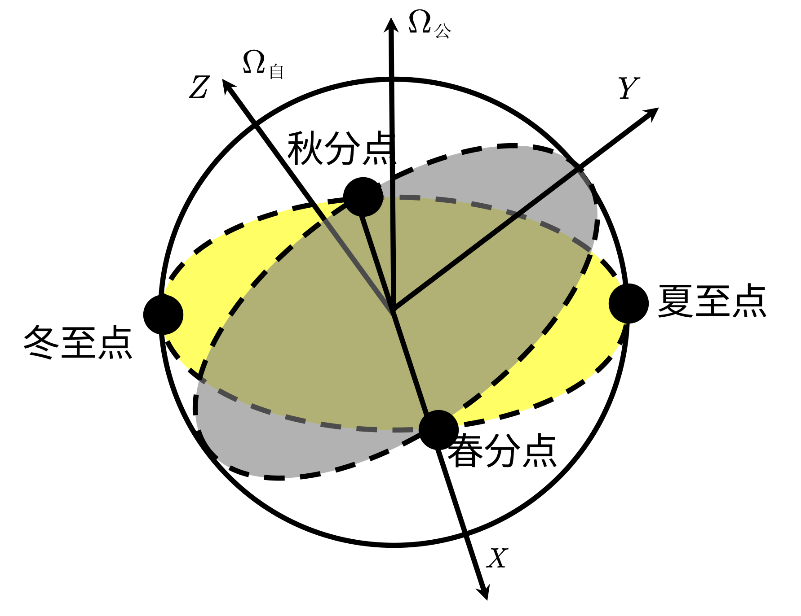
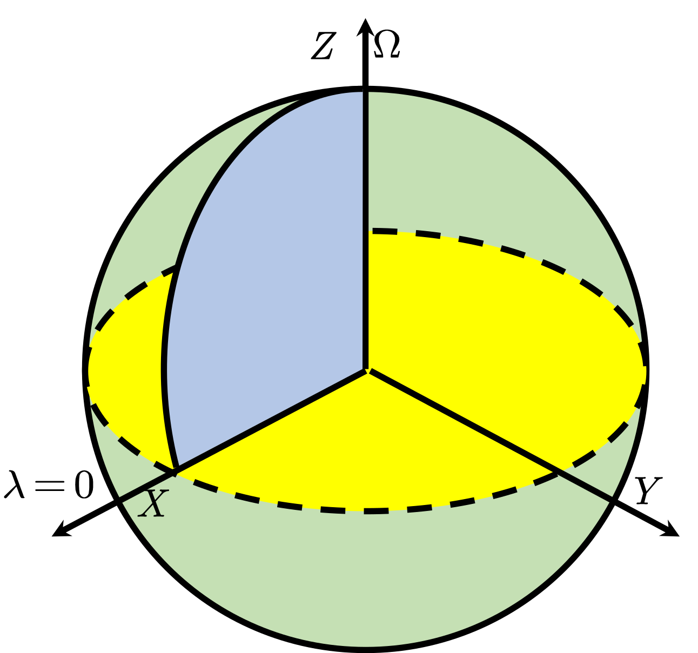
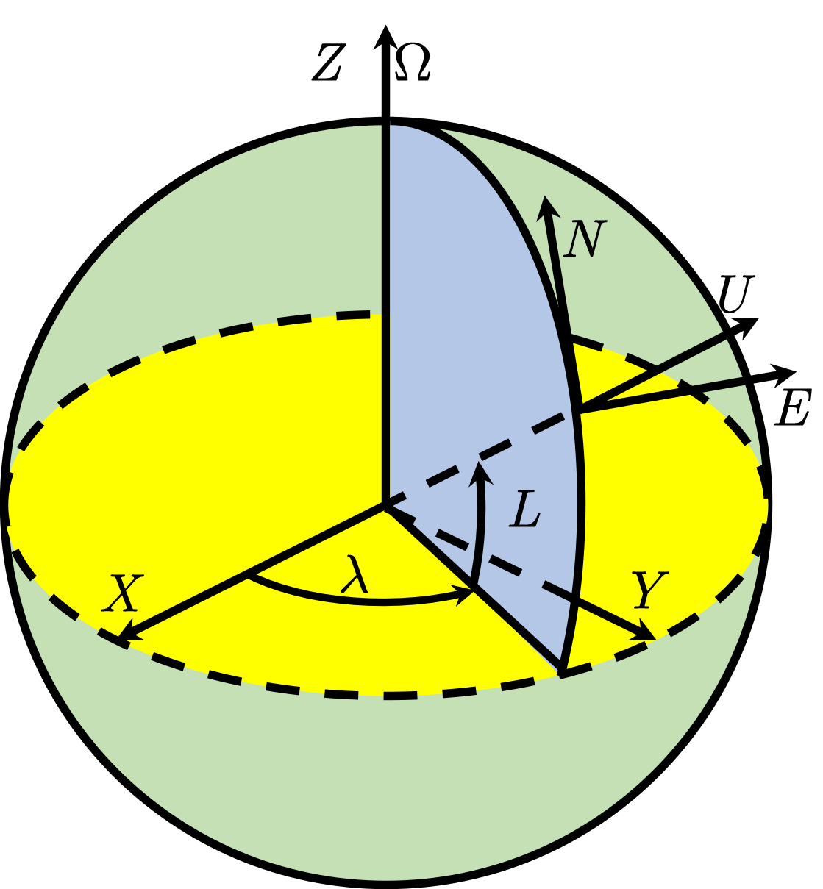
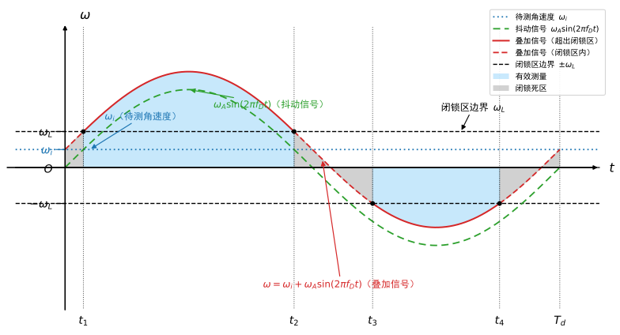
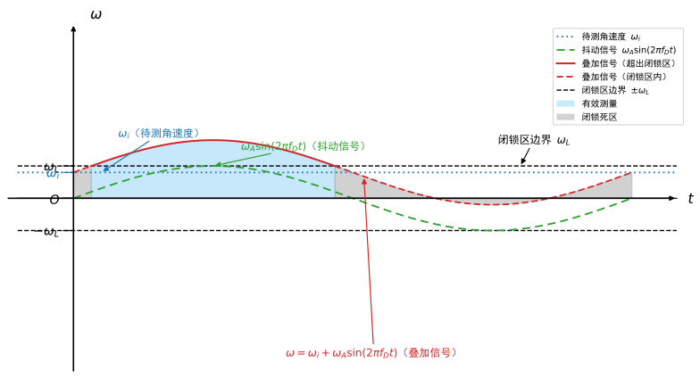
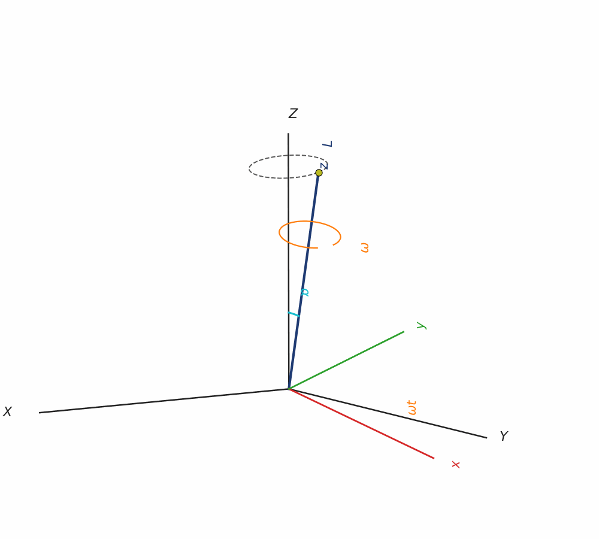
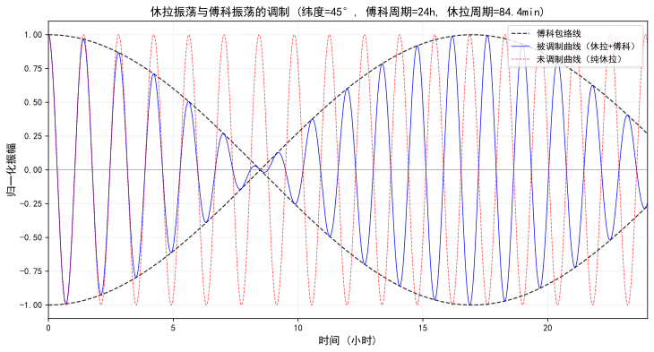

自主导航技术与应用
历史、发展和基础概念
什么是导航
导航是指在某参考系内将运动物体（载体）从起始点引导到目的地的技术或方法。通过几何学、天文学、无线电信号等任何手段确定或规划船舶、飞机的位置及航线的方法。
包含两方面内容：1，确定运动物体相对已知参考系统的位置、速度和姿态，称为导航科学；2，由一个地方到另一个地方航线的规划与保持，回避障碍并避免碰撞，称为导航方法，也可称为制导、领航或航线规划。1 是我们的主要任务。
导航技术
导航技术：确定位置和速度的方法，可以是人参与的，也可以是自动实现的。
导航系统
导航系统：也称辅助导航设备，是自动确定位置和速度的装置。
狭义导航系统：提供位置、速度信息。
广义导航系统：提供位置、速度、姿态信息。
导航的任务
确定运动物体（载体）的速度、位置和姿态。
定位和导航的联系
定位：确定载体的空间位置，但不包括速度和姿态。许多导航技术，严格地讲是定位技术。但由于定位结果更新率高，可以根据位置变化率推导出速度。
常用的导航方法
航标导航、视觉导航、仿生导航、惯性导航、天文导航、地标导航（匹配导航/地形或景象匹配）、重力、地磁导航、无线电导航（卫星定位导航）。
单独一种导航方式往往无法完成导航要求，因此提出了组合导航，其已成为目前主要趋势。
导航的分类
按数据获得手段
-
观测（舰位）法
依靠观测外部目标或接收外部（光波、无线电波）信息来确定载体的导航参数。典型如航标导航、天文导航、地标导航、无线电导航（卫星定位）。
-
推算（舰位）法
用舰船自身的导航设备，不断测量舰船的航向、航速或加速度，加入初始位置、速度和姿态，推算出舰船的瞬时位置、速度和姿态。典型是惯性导航。
按外部信息依赖
-
自主导航：不依赖地面支持，载体完全依靠自身携带的测量设备实时地完成导航任务，和外界不发生任何光、电联系。具有隐蔽性好、工作不受外界条件（自然、非自然）影响的优点。美国学者 Lemay 提出用下列四个特点来代表：①自给或独立，②实时，③无发射，④不依靠地面站。一些典型的自主导航：
-
惯性导航：利用惯性测量元件（陀螺、加速度计）测量载体相对于惯性空间的角运动参数和线运动参数，在给定运动的初始条件下，经导航解算得到载体速度、位置和姿态的一种导航方法。主要由加速度计、陀螺仪和导航计算机构成。分为平台式和捷联式。
优点有：
-
不依赖于任何外部信息，也不向外部辐射能量的自主式系统，故隐蔽性好，也不受外界电磁干扰的影响。
-
可全天候、全球、全时间地工作于空中、地球表面乃至水下。
-
能提供位置、速度、航向和姿态角数据，所产生的导航信息连续性好而且噪声低。
-
数据更新率高、短期精度和稳定性好。
缺点有：
常常通过组合导航的方式改善这些缺点。
-
天文导航：以已知准确空间位置的自然天体为基准，通过天体测量仪器（星跟踪器等光学传感器）被动探测天体位置，经解算确定测量点所在载体的导航信息。
优点有：
缺点有：
-
天文测量受到天体能见度的限制；
-
导航信息更新率较低，即计算时间较长。
-
卫星导航：是指采用导航卫星对地面、海洋、空中和空间用户进行导航定位的技术。通过对已知信标测量来确定运动体位置、速度和姿态信息的技术。测量运动体到四个或更多已知点的伪距、伪距变化率、距离差（后两者利用多普勒效应）来确定运动体的位置和速度，通过载波相位测量来确定运动体的姿态信息。
-
非自主导航。
按照运动体运动范围
主要有以下四方面的导航：海、陆、空、天。
按照应用领域
可分为军用和民用两个方面。
对导航系统的要求
-
精度：系统为运载体所提供的位置与载体当时的真实位置之间的重合度。
-
可用性：为运载体提供可用的导航服务的时间的百分比。
-
可靠性：系统在给定的使用条件下，在规定的时间内以规定的性能完成其功能的概率。
-
覆盖范围：一个面积或立体空间，在此区域内，导航信号足以使导航设备或操纵人员以规定的精度定出载体的位置。
-
导航信息更新率：导航系统在单位时间内提供定位或其他导航数据的次数。
-
导航信息多值性：有些导航系统为载体给出的位置信息可能有多种解释或位置指示发生了重复，必须具有多值性手段。
-
系统容量：导航系统提供导航服务的用户数量的多少。
-
系统完善性：当导航系统发生任何故障或误差变得超出了允许的范围时，系统发出及时报警的能力。
-
导航信息的维数：导航系统为用户所提供的是一维、二维还是三维的运动状态信息。
数学基础
旋转矩阵
Rz(θ)=Cij(zi,θ)Ry(θ)=Cij(yi,θ)Rx(θ)=Cij(xi,θ)=cosθ−sinθ0sinθcosθ0001=cosθ0sinθ010−sinθ0cosθ=1000cosθ−sinθ0sinθcosθ
记忆方式：对角为余弦，旋转轴为 1，1 下正弦正。
CAB 表示从坐标系 A 到 B 的变换，有关系：
CAB=(CAB)−1=(CBA)T
旋转角度的方向：绕坐标轴正方向逆时针旋转为正。
小角度旋转
以 Rz 为例，limθ→0Rz(θ)=1−θ0θ10001=I−δz(θ)。
此处刻意使用负号而非正号，是为了凑出反对称的形式。
归纳整理有：
δz(θ)δy(θ)δx(θ)=0θ0−θ00000=00θ000−θ00=00000−θ0θ0
这里 θ 是标量。这样一来，设坐标系 P 按顺序偏离坐标系 T 小角度 ϕ=[ϕx,ϕy,ϕz]T，则：
CTP=Rz(ϕz)Ry(ϕy)Rx(ϕx)=(I−δz(ϕz))(I−δy(ϕy))(I−δx(ϕx))≈I−δz(ϕz)−δy(ϕy)−δx(ϕx)=I−[ϕ×]
类似地，CPT=I+[ϕ×]。
其中符号 [⋅×] 表示向量的反对称阵：
aa×b[a×]=[a1,a2,a3]T,b=[b1,b2,b3]T=[a×]⋅b=0a3−a2−a30a1a2−a10
务必记住，以后会经常用到。
哥氏定理
描述绝对变化率与相对变化率之间的关系。假设有矢量 r，两个互相旋转的坐标系 m,n，则：
dtdrm=dtdrn+ωmn×r
其中，dtdrm,dtdrn 分别是在 m,n 坐标系内观察到的 r 的时间变化率，ωmn 是 n 相对 m 的旋转角速度。
常用坐标系
地心惯性坐标系

原点在地心，x 轴正方向由地心指向春分点，z 轴正方向为自转方向，y 轴正方向为 z×x，即右手法则。
地球坐标系

原点在地心，x 轴正方向由地心指向子午面与赤道交点，即经度 λ=0 处。y 轴正方向为 z×x，即右手法则。
Cie=cosωiet−sinωiet0sinωietcosωiet0001
ωie 是地球自转角速度。这个矩阵的计时起点和选择的方案有关。
地理坐标系
一般是东北天坐标系。参考下图：

通过上图的分析能够发现：
Ceg=Rz(90)Ry(90−L)Rz(λ)=−sinλ−sinLcosλcosLcosλcosλ−sinLsinλcosLsinλ0cosLsinL
Lλmain=arcsinC33,=arctanC31C32
机体坐标系
有东北天（ENU）、北东地等机体系，接下来研究的都是 ENU。
采用 z−x−y 转序，旋转角按顺序记 ψ−θ−γ，很自然的有：
Cgb=Ry(γ)Rx(θ)Rz(ψ)=cosγcosψ−sinγsinθsinψ−cosθsinψsinγcosψ+cosγsinθsinψcosγsinψ+sinγsinθcosψcosθcosψsinγsinψ−cosγsinθcosψ−sinγcosθsinθcosγcosθ
如果读者见到 sinψ 相关的部分符号完全相反，这表明使用的 ψ 定义不一致。推导者可能使用了北偏东为正的偏航角定义，由于在北东地坐标系中，使用北偏东也有一定合理性，部分工程实践中会将 ENU 和 NED 坐标系的偏航角都定义为北偏东为正。
我们此处不这样做，理由是在 ENU 中，北偏东不是坐标系逆时针旋转方向。
惯性导航预备知识
惯性器件
也称惯性仪表，即陀螺仪和加速度计。陀螺仪用来测量载体的角速度，或在控制角运动的伺服回路中用作控制环节；加速度计用来测量载体的加速度。
“惯性”的意义
-
陀螺仪和加速度计服从牛顿力学，基本工作原理是动量矩定理和牛顿第二定理，即基本惯性原理。
-
惯性元件的输出量都是相对惯性空间的测量值，即陀螺仪的输出是相对惯性空间的角速度，加速度计的输出是相对惯性空间的加速度。
机械陀螺仪
机械转子陀螺仪中，一个绕对称轴高速旋转的飞轮转子叫陀螺。将陀螺安装在框架装置上，使陀螺的自转轴有角转动的自由度，这种装置的总体叫做陀螺仪。基本上由这些部分构成：
-
陀螺转子（常采用同步电机、磁滞电机、三相交流电机等拖动方法来使陀螺转子绕自转轴高速旋转，并且其转速近似为常值）；
-
内、外框架（或称内、外环，它是使陀螺自转轴获得所需角转动自由度的结构）；
-
附件（是指力矩马达、信号传感器等）。力矩马达（力矩器）用于控制转子绕框架轴转动，信号器用于拾取陀螺输出角。
根据框架的数目、支承的形式、附件的性质等决定陀螺仪的类型。
按框架数目
单自由度陀螺；双自由度陀螺。机械转子陀螺仪的特性（单自由度和双自由度）。
主要是进动行为不同，对双自由度陀螺而言：
dtdHiV∣ω∣uωω×H=M=M=∣H∣∣V∣=HM=∣H×M∣H×M=∣ω∣u=HMHMsin90∘H×M=H2H×M=H2(H×M)×H=H21[(H⋅H)M−(M⋅H)H]=H21(H2cos0∘M−MHcos90∘H)=M
这表明陀螺进动是无惯性的行为，即一施加外力矩，立刻出现相应的进动行为，进动角速度轴垂直于角动量和力矩平面，方向由右手定则确定。
这里用到了一个非常有用的公式，请牢记：
(a×b)×c=(a⋅c)b−(b⋅c)a
对单自由度陀螺而言，它首先经历上面推导相同的行为，然后因为进动方向不自由，产生了与进动角速度方向相反的外力矩，这个外力矩产生的进动角速度将与原力矩导致的一致，即等效于未发生进动。
按支承类型
液浮陀螺仪；气浮陀螺仪；磁悬浮陀螺仪。
光学陀螺仪
光学陀螺仪是以 Sagnac 效应为基础研制出的新型陀螺仪，它包括激光陀螺仪和光纤陀螺仪。光学陀螺仪的理论基础：量子力学。优点是全固态、启动快、耐冲击、动态测量范围宽、数字输出、工作可靠、受温度影响小、受加速度影响小。特别适用于构建捷联惯导系统。
萨格奈克效应 Sagnac
在任意几何形状的闭合光路中，从某一观察点出发的一对光波沿相反方向运行一周后又回到该观察点时，这对光波的相位（或它们经历的光程）将由于该闭合环形光路相对于惯性空间的旋转而不同，相位差（或光程差）与闭合光路的转动角速率成正比。
L−L+t−t+Δtc>>ΩRΔL=2πR−RΩt−=ct−=2πR+RΩt+=ct+=c+ΩR2πR=c−ΩR2πR=t+−t−=c2−(ΩR)24πR2Ω⟹Δt≈c24πR2Ω=L+−L−=cΔt=c4πR2Ω=c4SΩ
Sagnac 效应从理论上给出了角速度和光程差的关系式。
一个早期且粗糙的实现是迈克尔逊矩形干涉仪，面积为 600m×300m。
当光程差发生改变时可以通过光学干涉仪观察到干涉条纹图样，当整个系统旋转时，条纹图样发生横向移动，由此可以计算旋转角速度。
尝试做一个简化的估计：ΔL≈3×1084×600×30024×60×602π≈1.7×10−7m。注意这里光速和一天的时间取得均不精确，为了简单，使用了平太阳日。关于为何矩形闭合光路适用圆形光路的结果，可以使用微元法来理解和推导，这是旋转导致的。
激光陀螺仪
把激光增益介质引入环形谐振腔中，构成环形激光器，极大地提高了闭合光路测量角速度的灵敏度。
采用激光作为光源。激光优良的相干性，使正反方向运行的两束光在陀螺腔内形成谐振，即光束沿腔体环路反复运行时一直能保持相干。改测量光程差（相位差）为测量两束光的频率差，提高了陀螺的测量灵敏度。
采用三个反射镜组成环形谐振腔，形成闭合光路。激光在谐振腔中形成谐振的条件：谐振腔的长度等于激光波长的整数倍，即 L=qλ，L 为光程，q 为任意正整数，λ 为波长。
注意这是个等边三角形，转轴是三角形中心，因此求解是容易的，进行速度分解和光程分析，则：
vvaΔLaΔLaLaLbLafaΔfS=cos300L/6ω=33Lω=vb=vcos600=63Lω=va⋅ta=63LωcL+ΔLa=63c−LωL2ω=L+ΔLa=L+63c−LωL2ω=1−Lω/63cL=1+Lω/63cL=qλaLb=qλbλf=c=Laqcfb=Lbqc=fb−fa=La⋅LbLa−Lbqc=L2L2ω/33c⋅cq=33λL⋅ω=Kω=Lλ4Sω=363L2
这里引入面积的原因跟前面的迈克尔逊干涉仪是类似的。我们实际上得到了角速度与频率差的关系，当然进一步地，还可以得到角增量的行为：
Δf=Lλ4Sω⟹N=∫0TΔfdt=∫0TLλ4Sωdt=Lλ4S∫0Tωdt=Kθ
其中 K=Lλ4S 称为激光陀螺的标度因数。常用的 He-Ne 激光波长 λ=6.328×10−7m，假定我们制造了一个谐振腔边长 a=0.1m 的正三角形激光陀螺仪，则：K=3a×λ4×43(3a)2≈9.12374×104Hz/rad。
增益大很多，因此可以测量很微小的角速度。
激光陀螺的闭锁效应
由于激光介质的色散、模式牵引和反射镜的背向散射等原因，当顺/逆时针两束相向行波的频率接近到一定程度时，两者间将产生相互耦合作用，频率变成完全一样，此即频率俘获或频率同步现象，频差消失致使陀螺的拍频输出为零。
本质是类似死区的非线性行为。
Δf={Kω1−ω2ωL20∣ω∣>ωL∣ω∣≤ωL
典型的锁区范围：数十度/小时～数千度/小时。
解决这个问题：
-
抖振偏频：机械式小振幅高频抖动交变偏频（工程最常用）。
-
四频差动：纵向塞曼效应、法拉第磁致旋光效应等物理偏频。
-
速率偏频：通过恒速运动使激光陀螺避开闭锁区。或通过往复式的速度运动。
-
磁镜偏频：横向磁光克尔效应：两束光同频率同相位，入射方向相反，若所加磁场方向平行于反射镜且垂直于入射面，磁场会使光束产生附加相移，两束光相移大小相等，符号相反。利用了横向磁光克尔效应，通过交变附加磁场改变两束光的相移和相位差，同抖振偏频原理一致。
下面只简单介绍一下抖振偏频。
抖振偏频
谐振腔通过抖动轮机构安装在陀螺基座上抖动轮与陀螺敏感轴重合（即垂直于谐振腔环路平面），由压电元件控制抖动轮施加周期性的角速率抖动偏频信号，抖动信号可以是正弦波形式的，也可以是矩形波或者三角波等对称波形，实际中采用最多且最容易实施的是正弦抖动信号。即施加
ωD=ωAsin(2πfDt)
陀螺仪测量的惯性角速率变为：
ω=ωi+ωAsin(2πfDt)
这个过程当然有误差，我们先来分析无附加误差的情形，即对无闭锁的：
θk=∫0Td(ωi+ωAsin(2πfDt))dt=∫0Tdωidt

对如图闭锁的情况：
θk′=∫0Tdωidt−[∫0t1(ωi+ωAsin(2πfDt))dt+∫t2t3(ωi+ωAsin(2πfDt))dt+∫t4Td(ωi+ωAsin(2πfDt))dt]=θk−δθ
教材称“由于穿越闭锁区的时间非常短，所以误差 δθ 很小，可以接受”，实际上它的意思是，相比原来根本测量不到（注意观察原始角速度，在死区内），这个误差是可以接受的。这个理由还不全面，实际上，由于时间很短，这段时间可以认为原速率是常值，因此多出来的那部分波峰可以用来填波谷，这部分的误差还能更小，真实的 δθ 比教材的说法（即我们上文推导的 δθ ）更小。可以看下图：

光纤陀螺仪
ΔLΔL=L+−L−=cΔt=c(t+−t−)=c4πR2Ω=cN×4πR2Ω=c2RLΩ=2πλ⋅Δφ
光纤陀螺有不少优点：
-
采用光纤作为光路，距离长，灵敏度高。
-
功耗低。
-
用相位差检测角速度，不存在闭锁效应问题。
-
全固态，可靠性高，抗冲击强。
其他陀螺仪
微机械（MEMS）陀螺仪
MEMS 陀螺仪多属振动陀螺，它利用哥氏力，即旋转物体在有径向运动时所受到的切向力来测量物体的转速。优点是体积小、启动快、成本低、动态范围宽、环境适应能力强、可通过微机械加工技术大批量生产。
微光电（MOEMS）陀螺仪
使用 MEMS 技术且基于 Sagnac 效应的陀螺仪，相比光学陀螺体积小质量轻，相比 MEMS 陀螺仪，灵敏度高且无运动部件，无需真空封装还能抗电磁干扰。缺点是 Sagnac 效应决定了基于其原理的小尺寸陀螺仪精度和灵敏度不会很高。
原子陀螺仪
以原子干涉仪为核心的转动测量装置，它利用原子干涉的 Sagnac 效应进行转动角速度的测量。是基于原子波干涉的 Sagnac 效应，与激光陀螺原理类似。
加速度计
是测量运载体线加速度的仪表。加速度计是通过测量加速度产生的惯性力来测量加速度的。因此，加速度计实质上是测力计。加速度计测量的理论基础是牛顿定律。
m(x¨+a)F弹f=−Dx˙−cx−mg=m(a+g)=−cxx˙=x¨=0=mF弹=a+g
f 称为比力，表示作用在单位质量物体上的非引力外力。
地球模型
地球是一个不规则球体，其真实形状很难用数学模型表达，按接受的复杂度和精度选择合适的模型：
-
大地水准体：通过全球海平面（并延伸到大陆内部）的地球重力场等势面围成的空间体。几何形状不规则。最不规则，但精度最高。
-
圆球：球心位于地心，半径 6371km。是简化的理想模型，精度不高。后续会解释其精度不高的体现。
-
参考旋转椭球体：中心位于地心，分别以 Re 和 Rp 为半长轴和半短轴的椭圆绕地球自转轴旋转 180 度所形成的椭球体，其中 Re 为赤道平面半径，Rp 为极轴半径，通过大地测量确定。也可用长半径 Re 和扁率 f 来描述。f=(Re−Rp)/Re。这是一个精度稍高的理想模型。
纬度的定义
根据不同的地球模型，纬度的描述也有差异：
-
地心纬度 Lc，所在点地心向径和地球赤道面的交角。
-
地理纬度 L（常简称为纬度），这是通过所在点的参考椭球体法线和地球赤道面的交角。
-
天文纬度 Lg，这是所在点的铅垂线（即大地水准体法线）和地球赤道面的交角。通常天文纬度被采用为地球纬度。天文观测只能给出天文纬度。
地理纬度和地心纬度的偏差可用如下公式表示：
tanΔL≈ΔL≈fsin2L
ΔL=L−Lc
地理垂线和地心垂线的最大偏差发生在纬度为 45° 的地方，约为 11′。
地理垂线和真垂线（天文垂线）的偏差很小，最大偏差角约为 3 角秒，因此地理纬度和天文纬度不加区别，统称为纬度。
海里的定义
同一子午圈上两点的纬度差为 1 角分，则两点间的距离为 1 海里（nautical mile，单位 nmile），将地球近似为圆球，则：
1n mile=601×180π×6371000=1853.2m≈1.85km
同一子午圈上地理纬度和地心纬度相同的两个点，实际位置的南北最大偏差为 11n mile，约为 20km。地理纬度和天文纬度实际位置的南北最大偏差为 92.5m。
参考旋转椭球体的曲率半径
经圈也叫子午圈，其半径记作 RM，跟纬圈相切，子午圈正交的圈叫卯酉圈，半径记作 RN，他们共同记作主曲率半径。
RMRNRM1RN1=Re(1−2f+3fsin2L)=Re(1+fsin2L)=[Re(1−2f+3fsin2L)]−1≈Re1(1+2f−3fsin2L)=[Re(1+fsin2L)]−1≈Re1(1−fsin2L)
这里应用了幂函数的泰勒展开。f 是扁率，与这里的一致。
与纬度有关的计算用 RM，与经度有关的计算用 RN。
重力与计时
万有引力提供了重力加速度和向心运动的加速度，因此：
g=G−ωie×(ωie×r)
真太阳日：太阳相邻两次照射同一个地点的时间间隔。
平太阳日：真太阳日的平均，严格的 24 小时。
恒星日：相对遥远恒星的时间，23 时 56 分 4 秒平太阳时。
显然，向心加速度和曲率半径都随着纬度变化，重力加速度将随着纬度变化。有达朗贝尔方程：
g(L)g0g(L)g0=g0(1+0.0052884sin2L−0.0000059sin22L)=978.049cm/s2=g0(1−0.0026373cos2L+0.0000059cos22L)=980.616cm/s2
前者的参考重力加速度来自赤道，后者来自纬度 45° 的海面。这个公式推导属课外部分，教材也未提供，下面给出我的推导：
从矢量方程出发：
g=G−ωie×(ωie×r)
其中 G 为万有引力加速度，ωie 为地球自转角速度，r 为地心到地表点的矢径。
利用矢量三重积公式（如果你看到这里了，请记得这个公式，你之后和之后的之后会用到的。）
a×(b×c)=(a⋅c)b−(a⋅b)c
令 a=b=ωie，c=r：
ωie×(ωie×r)=(ωie⋅r)ωie−ωie2r
代入原式得：
g=G+ωie2r−(ωie⋅r)ωie
取地表点 P 的局部子午面，设地理纬度为 L，地心距为 r。将各矢量分解为沿矢径方向（径向 er，向外为正）和垂直于矢径指向北极方向（纬向 eL，向北为正）：
rωieG=rer=ωie(sinLer+cosLeL)=−r2GMer
这样就有径向的重力加速度：
gr=−r2GM+ωie2r−ωie2rsin2L=−r2GM+ωie2rcos2L
纬向分量：
gL=−ωie2rsinLcosL
由于离心加速度远> 小于万有引力（ωie2r≪GM/r2），取一阶近似：
g=∣g∣=gr2+gL2≈∣gr∣(1+2gr2gL2)≈r2GM−ωie2rcos2L
利用 cos2L=1−sin2L：
g≈r2GM−ωie2r+ωie2rsin2L
参考旋转椭球体的地心距随纬度变化：
rr21=RN=Re(1+fsin2L)≈RN21=[Re2(1+fsin2L)]−2≈Re21(1−2fsin2L)
将 r 和 1/r2 代入上式，忽略二阶及以上小量（如 fωie2 项、sin4L 项）：
g(L)≈Re2GM(1−2fsin2L)−ωie2Re+ωie2Resin2L=g0(Re2GM−ωie2Re)+g0α(−2fRe2GM+ωie2Re)sin2L
提取 g0（赤道重力加速度）：
g(L)=g0(1+αsin2L),α=−2f+GM/Re2ωie2Re
考虑 gL2/(2gr2) 项，则：
2gr2gL2≈2(GM/r2)2(ωie2rsinLcosL)2∝sin2Lcos2L=41sin22L
由此得到完整的国际重力公式：
g(L)=g0(1+αsin2L−βsin22L)
其中 β≈5.9×10−6 为二阶小量。
代入以下地球物理常数：
-
地心引力常数：GM=3.986004418×1014m3/s2
-
地球自转角速度：ωie=7.292115×10−5rad/s
-
赤道半径：Re=6378137m
-
扁率：f=1/298.257223563≈0.00335281
-
赤道实际加速度：g0=9.78049m/s2
重力和高度的关系：
g0gg=KR2M=K(R+h)2M=g0(R+h)2R2=g0(1+Rh)−2≈g0(1−R2h)
Schuler 调谐
运载体上确定出地垂线后即可确定出运载体的姿态。因此在导航系统中确定地垂线是一项重要的技术。在静止或匀速直线运动条件下，地垂线可用单摆等简单方法确定出来。当运载体具有加速度时，单摆不能正确指示地垂线，而且加速度越大，单摆偏离地垂线越严重。当单摆的无阻尼振荡周期为 84.4 分钟时，指示垂线的精度不受加速度的影响。
αaJα¨aα¨aα¨bJα¨+RJaα¨+Jmglα=α+αb=−mglsinα+malcosα=α¨+α¨b=Ra=−mglsinα+malcosα=(Jml−R1)a
只要 Jml−R1=0，垂线偏差角与加速度无关，很容易解出这个二阶微分方程，并知道这个震荡频率实际上是 Rg。
若用单摆来实现，则根据单摆的振荡周期 2πgl，摆长应该等于地球半径。
用物理摆来实现，要令 l=mRJ，故 l 很小，要让 l 大一些，应该考虑保持 m 而尽可能增加 J，所以应该试着设计成环形。
惯导基本方程
也叫比力方程。本质上描述了相对惯性空间运动的坐标系的行为。
使用下标表示在哪个坐标系中求变化率，上标表示在哪个坐标系中表示。
例如，dtdRe 描述了对位置矢量 R 在地球坐标系中求时间变化率，也叫地速，简记作 Vep，即平台（platform）相对地球（earth）的速度，这样，由于地球相对惯性空间自转，根据哥氏定理有：
dtdRi=dtdRe+ωie×R=Vep+ωie×R
由于加速度计测量的实际上是加速度，因此上面的方程还需要再在惯性空间中求一次导，在惯性空间中求导的原因是，加速度计测量的结果是相对惯性空间而言的：
dt2d2Ri=dtdVepi+dtd(ωie×R)i
我们逐个来解决。对第一项应用哥氏定理，注意 ωip=ωie+ωep：
dtdVepi=dtdVepp+ωip×Vep=dtdVepp+(ωie+ωep)×Vep
注意这里应用哥氏定理转换成平台坐标系的根本原因是，平台坐标系是导航用的坐标系。
对第二项应用求导的链式法则。注意 dtdωiei=0：
dtd(ωie×R)i=dtdωiei×R+ωie×dtdRi=ωie×(Vep+ωie×R)
代入后整理一下：
dt2d2Rif+GVep˙=dtdVepp+(2ωie+ωep)×Vep+ωie×(ωie×R)=Vep˙+(2ωie+ωep)×Vep+ωie×(ωie×R)=f−(2ωie+ωep)×Vep+g
比力方程说明：只有当加速度计的输出去掉了有害加速度之后，才能积分得到地速。
惯性高度通道
用向量格式重写比力方程，得到
V˙xpV˙ypV˙zp=fxpfypfzp−02ωiezp+ωepzp−(2ωieyp+ωepyp)−(2ωiezp+ωepzp)02ωiexp+ωepxp2ωieyp+ωepyp−(2ωiexp+ωepxp)0VxpVypVzp+00−g
整理高度通道：
V˙zp令:azpV˙zpg=fzp+(2ωieyp+ωepyp)Vxp−(2ωiexp+ωepxp)Vyp−g=−(2ωieyp+ωepyp)Vxp+(2ωiexp+ωepxp)Vyp=fzp−azp−g=g0(1+Rh)−2=g0(1−R2h)
如果忘了，可以再去看看这个重力高度变化公式。
纯惯性高度通道的框图形如
fzp(s)h(s)=1+s21⋅R2g0(−1)s21=s2−R2g01
显然存在正的特征根，这是不稳定的。作为训练有素的控制工程师，应该考虑引入更多反馈回路或其他方式增加阻尼，改善稳定性。一般采用的是引入其他高度信息回路，例如：
sVzpshsVzp+(K2−R2g0)h=fzp−K2(h−hr)−(g0−R2g0h)−azp=Vzp−K1(h−hr)=fzp+K2hr−g0−azp
写成矩阵形式
[s−1K2−R2g0s+K1][Vzph]=[fzp+K2hr−g0−azpK1hr]
可以得到特征多项式：
Δ(s)=s−1K2−R2g0s+K1=s2+K1s+K2−R2g0
考虑一个一般二阶模型：
s2+2ξωns+ωn2
ωnξ=K2−R2g0=2K2−R2g0K1
这表明可以通过设计 K1,K2 取得理想的性能。最终的输出形如：
h=s2+K1s+K2−R2g0fzp−g0−azp+s2+K1s+K2−R2g0K1s+K2hr
新回路引入后，基本滤除高频误差分量，衰减低频误差分量，高度信息：稳定、精度较高。
如有必要，当然可以考虑引入速度反馈。
平台式惯导系统的力学编排
平台式惯导系统的力学编排（mechanizations）是指实现正确控制惯性平台和解算导航参数的方案和方程，包括平台指令角速度的计算公式、速度和位置的解算方程。
平台式惯导系统通过加速度计测量的载体加速度信息和在平台框架上获取的载体姿态信息即可计算出全部导航参数。姿态来自直接读取，至多涉及平台坐标系的变换和更新，因此相比捷联式惯导系统，姿态的解算要容易很多。
惯性导航的基本原理是测量载体的加速度，将加速度积分得到载体的速度，由速度计算载体相对于地球的位置。由于载体在空中是作任意运动，因此既要测得加速度的大小，还要准确知道加速度的方向。
主要的任务是：①剔除有害加速度；②确定加速度方向。
平台坐标系一般要相对稳定以提供稳定的加速度计测量基准同时方便读取姿态，这就要求设计一个可靠的陀螺稳定平台建立合适的坐标系。根据平台坐标系的选择，平台式惯导系统分为半解析式和解析式，前者对齐重力，后者与惯性对齐。本笔记主要研究半解析式惯导系统。
半解析式惯导系统的主要特征是：有两轴加速度完全不敏感重力加速度，根据水平坐标系的不同处理方式，有指北、自由、游移方位三种。不同的水平坐标系处理方式，本质是不同的指令角速度选取。
惯性平台稳定
为了正确确定地垂线方向需要构造 Schuler 调谐，这对于电子实现方式并不是做不到的事。参考教材 7.3.2 节。
指北方位系统
选取 ωip=ωig，即令平台坐标系跟踪地理坐标系。
ωcmd=ωig=ωie+ωeg=0ωiecosLωiesinL+−RMVNRNVERNVEtanL=−RMVNωiecosL+RNVEωiesinL+RNVEtanL
比力方程：
V˙EV˙NV˙U=fEfNfU−02ωiesinL+RNVEtanL−(2ωiecosL+RNVE)−(2ωiesinL+RNVEtanL)0−RMVN2ωiecosL+RNVERMVN0VEVNVU+00−g
简单整理一下有：
V˙EV˙NV˙U=fE+(2ωiesinL+RNVEtanL)VN−(2ωiecosL+RNVE)VU=fN−(2ωiesinL+RNVEtanL)VE−RMVNVU=fU+(2ωiecosL+RNVE)VE+RMVNVN−g
VU 和水平速度相比可忽略。因此：
V˙EV˙N=fE+(2ωiesinL+RNVEtanL)VN=fN−(2ωiesinL+RNVEtanL)VE
由于平台坐标系跟踪地理坐标系，位置的确定也很容易：
L˙=RMVN,λ˙=RNcosLVE
高度通道不应该用纯比力方程算，这部分可以参考前面的分析。
姿态直接从平台框架轴上读取即可，因为指北方位系统的平台坐标系跟踪地理坐标系。
由于平台模拟当地的地理坐标系，所以航向角、俯仰角及横滚角可从平台环架轴上直接读取；各导航参数间的关系比较简单；导航解算方程简洁，计算量较小，对计算机要求较低。
缺点也是很明显的，由于指令角速度 ωcmd.z 中含有一个正切函数，这个系统不能在高纬度工作。
游移方位系统
本笔记和教材的讲解顺序不一致，这是因为笔者认为想到游移方位系统应该比自由方位系统更自然：指北方位系统中，由于存在正切函数，导致在高纬度无法正常工作，为了解决这一问题，同时避免造成其他影响，想办法仅去除引发指令角速度中正切项的部分即可。我们令 ωep.z=0 就有：
ωippCgpωipxpωipypωipzp=ωiep+ωegp+ωgpp=Cgp(ωieg+ωegg)+ωgpp=Rz(α)=cosα−sinα0sinαcosα0001−RMVNωiecosL+RNVEωiesinL+RNVEtanL+00α˙(t)=−RMVNcosα+(ωiecosL+RNVE)sinαRMVNsinα+(ωiecosL+RNVE)cosαωiesinL+RNVEtanL+α˙(t)
α˙(t)=−RNVEtanL
α 称为游移方位角，它是因平台坐标系不跟踪平台运动引起的 z 轴角速率引起的。游移方位系统的指令角速率为：
ωcmd=−RMVNcosα+(ωiecosL+RNVE)sinαRMVNsinα+(ωiecosL+RNVE)cosαωiesinL
回顾导航任务，我们还是需要求解比力方程，此处多抄写一遍：
Vep˙=f−(2ωie+ωep)×Vep+g
我们测量的的比力项是在平台坐标系下的，投影到该坐标系改写上式：
Vepp˙=f−(2ωiep+ωepp)×Vepp+gp
由于已知 ωiee，改写上式：
Vepp˙=f−(Cep2ωiee+ωepp)×Vepp+gp
这表明，若有位置矩阵 Cep 和位置速率 ωepp 原比力方程可以转化为一个关于地速的微分方程。
注意分析地球坐标系，地理坐标系和平台坐标系的关系，不难得到位置矩阵：
Cep=Rz(α)Rz(90)Ry(90−L)Rz(λ)=−cosαsinλ−sinαsinLcosλsinαsinλ−cosαsinLcosλcosLcosλcosαcosλ−sinαsinLsinλ−sinαcosλ−cosαsinLsinλcosLsinλsinαcosLcosαcosLsinL
C13sin2αsinαcosαC31Lλ主α主=sinαcosL,C23=cosαcosL,C33=sinL=C132+C232C132,cos2α=C132+C232C232=C132+C232C13C23=cosLcosλ,C32=cosLsinλ=arcsinC33=arctanC31C32=arctanC23C13
可以发现，位置矩阵蕴含了我们所需的经纬度，自由方位角等信息，对它进行深入研究是必要且合理的。而由于位置矩阵与 α(t) 有关，它也是时变的，我们需要研究它的更新方式，可以推测，应该是一个或一组微分方程。：
对从地心发出的位矢 rp 来说，它满足：
rp=Cepre
现在两边关于时间求导，在同一参考坐标系 R 下（此处略去）：
rp˙re˙=Cep˙re+Cepre˙=0=ωepe×re
有
Cep˙=−Cep[ωepe×]=−[ωepp×]Cep
这里用到了一个关系：
A⋅[b×]⋅AT=[(A⋅b)×],A∈SO(3),即 A⋅AT=I,det(A)=1
这个公式的证明可能不太好想，将 AT 移到右侧：
A⋅[b×]=[(A⋅b)×]⋅A
上面的等式本质上描述了两个等价的线性变换，他们对任意向量施加作用后结果应相等，现在考察任意向量 c：
A⋅[b×]⋅cA⋅(b×c)=[(A⋅b)×]⋅A⋅c=(A⋅b)×(A⋅c)
这个线性变换最终等价于这个分配性质。下面证明这个性质。
对于任意三个向量 u,v,w，有一个性质：u⋅(v×w)=(u×v)⋅w，这启发我们从此处入手。设 x 是空间中任意一个向量
x⋅[A(b×c)]x⋅[(Ab)×(Ac)]=(ATx)⋅(b×c)=det(ATx,b,c)=det(x,Ab,Ac)=det(A(A−1x),Ab,Ac)=det(A)det(A−1x,b,c)
此处利用了行列式几何意义，这个分配规律不是默认成立的。要求 A∈SO(3)，因为 A⋅AT=I,det(A)=1 这两个性质我们都用到了。
已知位置矩阵，为了求解比力方程，还需求解位置速率 ωepp。
ωepp=ωegp+ωgpp=Cgpωegg+ωgpp=Cgp=Rz(α)cosα−sinα0sinαcosα0001ωeg的线性变换式,设计去除z分量0RN1RNtanL−RM100000Cpg=Rz(−α)=Rz(α)Tcosαsinα0−sinαcosα0001Vepp+ωgpp=−τf1−Rxp1RNtanL−Ryp1τf10000Vepp+ωgpp=−τf1−Rxp10−Ryp1τf10000Vepp
其中：
Rxp1Ryp1τf1=RMsin2α+RNcos2α=RMcos2α+RNsin2α=(RM1−RN1)sinαcosα
Rxp,Ryp 称作自由方位等效曲率半径，1/τf 称为扭曲率。这部分推导请牢记，因为之后马上就会再碰到。
回顾主曲率半径的计算公式，同时比对本节中对位置矩阵的相关分析，可以得到：
Rxp1Ryp1τf1=Re1(1−fC332+2fC132)=Re1(1−fC332+2fC232)=Re2fC13C23
这就将位置矩阵更新方程中的变量全部转换为矩阵变量，至多需求解 9 个微分方程，把反对称阵展开发现有若干 0 项，故减少到 6 个微分方程，又由于 Cep∈SO(3)，我们之后会知道这个位置矩阵的最小表示实际只需要 3 个参数。
完成位置更新后，还应该求解比力方程给出的微分方程组。
本课程中提及的大部分微分方程的求解都依赖数值方法，暂时不必过度纠结能否解出。
自由方位系统
思想根源和游移方位系统一样，都是对指北方位系统正切项的改进。存在矫枉过正，即指北系统在高纬度施矩过大，游移系统移除正切项解决了此问题，自由系统则索性不施矩。
自由方位系统是极端化的游移方位系统。它令 ωip⋅zp=0，这就存在一个自由方位角 αf：
ωcmd=−RMVNcosαf+(ωiecosL+RNVE)sinαfRMVNsinαf+(ωiecosL+RNVE)cosαf0
其中
ωgpp=00α˙(t),α˙f(t)=−(ωiesinL+RNVEtanL)
位置矩阵和位置速率的求解参见游移方位系统。
这部分值得额外一说的是游移方位系统的一个额外优点，对游移方位系统来说，位置矩阵更新方程是：
Cep˙=−(ωepp×)Cep=−00−ωepyp00ωepxpωepyp−ωepxp0Cep
对自由方位系统来说，这个更新方程是：
Cep˙=−(ωepp×)Cep=−0ωepzp−ωepyp−ωepzp0ωepxpωepyp−ωepxp0Cep
可见游移方位系统在求解更新方程时，可以少解两个微分方程，因此计算要容易些。
捷联惯导系统
陀螺和加速度计直接固联在运载体上，此类惯导称为捷联式惯导系统，简称捷联惯导。在结构上，捷联式惯导系统和平台式惯导系统的主要区别是前者没有实体的惯导平台，即其使用虚拟的数学惯导平台。
捷联式惯导系统导航坐标系也有三种选择：指北方位，自由方位和游移方位。
捷联惯导系统与平台惯导系统的区别
捷联惯导系统解算的主要工作
是解微分方程：姿态微分方程、速度微分方程和位置微分方程。
惯导系统微分方程的数值解法有两大类：一类是利用角速度和比力进行计算；另一类是利用角度增量和速度增量进行计算。
有惯导基本方程
Vepp˙=fp−(2ωiep+ωepp)×Vepp+gp
对于平台惯导系统，由于平台的存在，导航坐标系的比力 fp 可以由加速度计直接测得；但对于捷联惯导系统，加速度计是沿机体坐标系安装的，它只能测量沿机体坐标系的比力 fb。因此需要把机体坐标系下的比力变换到平台坐标系，这个方向余弦矩阵叫做捷联矩阵，通常记作 T，根据捷联矩阵的元素可以单值地确定飞行器的姿态角，因此捷联矩阵又叫做飞行器姿态矩阵。由于捷联矩阵起到了平台的作用，所以又叫做“数学平台”。
更新捷联矩阵是捷联惯导系统需要解决的一个关键问题。
捷联惯导系统的工作流程
-
系统的启动和自检测
系统上电启动后，首先要通过自检测程序检测系统各个部分的工作是否正常。包括电源、惯性仪表、计算机及计算机软件。如果有不正常现象，发出告警信息或给出故障码。系统的自检测是保证系统进入导航状态后能正常工作、提高系统可靠性的一种措施。
-
系统的初始化
给定初始位置和初始速度等信息，初始对准（获得初始姿态和初始姿态矩阵），惯性仪表的校准（提高导航精度）。微分方程等更新方法适用的条件是初始条件已知。
-
惯性仪表的误差补偿
由于惯性仪表直接安装在载体上，所以载体的线运动和角运动都会引起惯性仪表较大的误差，即动态误差。提高惯性仪表精度的途径主要有两种：1，提高惯性仪表的制造精度；2，采用误差补偿的方法提高惯性仪表的使用精度。
误差补偿方法的前提是获得惯性仪表的误差模型，采用软件补偿的方法提高惯性仪表的使用精度。
-
姿态矩阵的计算（包括姿态的计算）
姿态矩阵的计算是捷联式惯导算法中最重要的一部分，也是捷联式系统所特有的。姿态矩阵的作用相当于平台式惯导系统的陀螺稳定平台。
-
导航解算（位置和速度的计算）
导航解算就是利用姿态计算的结果，把加速度计的输出信息变换到导航坐标系，然后计算得到载体的速度、位置等导航信息。
-
制导和控制信息的提取
制导与控制所需要的信息可以从导航系统中提取，这些信息包括载体的姿态、角速度、线速度、加速度等。
捷联矩阵与姿态角
选取游移方位系统作为理想的平台坐标系。机体坐标系固联在飞行器上，其旋转行为和顺序以及姿态角由下式定义：
Cpb=Ry(γ)Rx(θ)Rz(ψ^)=cosγcosψ^−sinγsinθsinψ^G−cosθsinψ^sinγcosψ^+cosγsinθsinψ^cosγsinψ^+sinγsinθcosψ^Gcosθcosψ^sinγsinψ^−cosγsinθcosψ^−sinγcosθsinθcosγcosθ
根据捷联矩阵定义：
T=Cbp=(Cpb)T=cosγcos−sinγsinθsinψ^cosγsinψ^+sinγsinθcosψ^−sinγcosθ−cosθsinψ^cosθcosψ^sinθsinγcosψ^+cosγsinθsinψ^sinγsinψ^−cosγsinθcosψ^cosγcosθ
注意这里有定义域问题：
θ∈(−2π,2π),γ∈(−π,π),ψ∈(0,2π)
θ主γ主ψ^主=arcsinT32=arctan(−T33T31)=arctan(−T22T12)
求出主值后：
θγψ^=θ主=⎩⎨⎧γ主γ主+πγ主−π当 T33>0 时当 T33<0,γ主<0 时当 T33<0,γ主>0 时或 γ=atan2(−T31,T33)=⎩⎨⎧ψ^主ψ^主+2πψ^主+2π当 T22>0 且 ψ^主>0 时当 T22>0 且 ψ^主<0 时当 T22<0 时
ψ=ψ^+α,ψ={ψψ−2π当 ψ<2π当 ψ>2π
姿态更新的方法有很多，例如前面平台惯导系统更新位置矩阵的方法在此处也可用，需要注意的是：在捷联惯导系统中，测量位于机体坐标系 b 下，因此：
C˙bp=Cbp(ωpbb×)
另一种方法则是自然地引入欧拉角微分方程，参考前面对转序的定义，可以得到微分方程组：
ωpbb=Ry(γ)Rx(θ)Rz(ψ^)⋅ψ^˙⋅k+Ry(γ)Rx(θ)⋅θ˙⋅i+Ry(γ)⋅γ˙⋅j=cosθsinγ−sinθ−cosθcosγcosγ0sinγ010ψ^˙θ˙γ˙
其中 i,j,k 分别为 x,y,z 方向的单位向量。
整理被测量和更新量：
ψ^˙θ˙γ˙=cosθ1−sinγcosγcosθsinθsinγ00cosθcosγsinγcosθ−sinθcosγωpbb
为了不影响讲解节奏，此处提前先给出各种姿态更新算法的对比，以让读者了解为何要研究后续相当复杂的姿态更新方法。
读者所熟悉的方向余弦法对姿态矩阵微分方程作求解，避免了欧拉角法中方程的退化问题，可全姿态工作。过去认为姿态矩阵微分方程是包含九个未知量的线性微分方程组，与四元数法相比，计算量大，实时计算困难，工程上并不实用。但深入分析表明，其精度与四元数法相当，且由于方向余弦矩阵在导航解算中本就是必需量，四元数法还需额外转换为矩阵，因此方向余弦法在实际运算中反而具有使用方便、编程容易、计算量小的优势。随着计算机性能提升，两者差异已越来越模糊。
欧拉角算法通过求解欧拉角微分方程直接计算航向角、俯仰角和横滚角。欧拉角微分方程关系简单明了，概念直观，容易理解，解算过程中无需作正交化处理，但方程中包含有三角运算，这给实时计算带来一定困难。而且当俯仰角接近 90°时方程出现退化现象（即所谓“死锁”），这相当于平台惯导中惯性平台的锁定，所以这种方法只适用于水平姿态变化不大的情况，而不适用于全姿态运载体的姿态确定。
四元数法只需求解四个未知量的线性微分方程组，计算量比方向余弦法小，且算法简单，易于操作，是较实用的工程方法。但四元数法实质上是旋转矢量法中的单子样算法，对有限转动引起的不可交换误差的补偿程度不够，所以只适用于低动态运载体（如运输机等）的姿态解算。而对高动态运载体，姿态解算中的算法漂移会十分严重。
旋转矢量法可采用多子样算法实现对不可交换误差做有效补偿，算法关系简单，易于操作，并且通过对系数的优化处理使算法漂移在相同子样算法中达到最小，因此特别适用于角机动频繁激烈或存在严重角振动的运载体的姿态更新。
四元数法和旋转矢量法本质都是通过计算姿态四元数实现姿态更新，但前者直接求解姿态四元数微分方程，而后者通过求解姿态变化四元数再求解姿态四元数，两者的算法思路并不相同。
对于诸如人造卫星等角运动比较规则的运载体，常采用罗德里格参数实现姿态确定和控制。罗德里格参数实质上是四元数在三维超平面上的投影，它去除了四元数的一个冗余度，降低了计算量。
姿态更新计算的四元数算法
先对四元数做些介绍。
Q=q01+q1i+q2j+q3k,q0∼3∈R
-
矢量式：Q=q0+q
-
复数式：Q=q01+q1i+q2j+q3k
-
共轭四元数：Q=q01−q1i−q2j−q3k
-
三角式：Q=cos2θ+ξsin2θ
-
指数式：Q=eξ2θ
-
矩阵式：Q=[q0q1q2q3]T
-
四元数范数：∥Q∥=q02+q12+q22+q32，若为 1 则称为规范化四元数，描述刚体旋转的四元数是规范化四元数。
-
加减和等号操作都参考向量方法。
-
四元数的乘法：
-
P⊗QP⊗Q=p0p1p2p3−p1−p2−p3p0p3−p2−p3p0p1p2−p1p0q0q1q2q3=M(P)Q=q0q1q2q3−q1−q2−q3q0−q3q2q3q0−q1−q2q1q0p0p1p2p3=M′(Q)P
-
红色部分分别称为 M(P) 和 M′(Q) 的核。
-
满足分配律和结合律，不满足交换律。
-
向量 rR 和 rb 是零标量的四元数，Q 是 R 到 b 的旋转四元数则：
-
rRrb=Q⊗rb⊗Q∗=Q∗⊗rR⊗Q
-
注意旋转方向。
-
可以推出：
CbR=q02+q12−q22−q322(q1q2+q0q3)2(q1q3−q0q2)2(q1q2−q0q3)q02−q12+q22−q322(q2q3+q0q1)2(q1q3+q0q2)2(q2q3−q0q1)q02−q12−q22+q32
即 CbR=M(Q)M′(Q∗) 若理解有困难，建议回看四元数乘法。
下面开始介绍四元数更新方法。首先分析四元数的几何意义。
OO′O′AO′BO′A′r′=(r⋅u)u=r−OO′=r−(r⋅u)u=u×O′A=u×r−(r⋅u)u×u=u×r=O′Acosθ+O′Bsinθ=rcosθ−(r⋅u)ucosθ+u×rsinθ=OO′+O′A′=rcosθ+(1−cosθ)(r⋅u)u+u×rsinθ
利用三重积公式做变换（也许你没看到或忘了，但前面曾用到过）：
r′=rcosθ+(1−cosθ)[r+u×(u×r)]+u×rsinθ=r+u×rsinθ+(1−cosθ)u×(u×r)
将上式向 R 系内投影：
r′R=rR+(u×r)Rsinθ+(1−cosθ)[u×(u×r)]R
记：
r′R=rx′ry′rz′,rR=rxryrz,uR=lmn
则有线性结构：
r′R=rR+(u×r)Rsinθ+(1−cosθ)[u×(u×r)]R=(I+[uR×]sinθ+(1−cosθ)[uR×][uR×])rR
记
D=I+[uR×]sinθ+(1−cosθ)[uR×][uR×]
其中 rR=rb0=r′b，这是因为位矢与机体坐标系 b 固连。故：
CbR=D=I+[uR×]sinθ+(1−cosθ)[uR×][uR×]=I+2[uR×]sin2θcos2θ+sin22θ[uR×][uR×]
为帮助读者理解，可把机体坐标系 b 想象成由头颅确定的坐标系（近似把头部视为刚体）。设机体系原点 Ob 在眉心，位矢 r 由眉心指向右眼。只要头部不发生形变，r 在机体系中的三个分量就是常数。
令：
⎩⎨⎧q0=cos2θq1=lsin2θq2=msin2θq3=nsin2θ
可以构造一个四元数：
Q=cos2θ+uRsin2θ
这就给出了四元数的几何由来和三角表示，下面基于三角表示推导其微分方程，物理意义会更明晰。我们直接对等式左右求导：
dtdQ=−2θ˙sin2θ+2θ˙uRcos2θ+sin2θdtduR
对 dtduR 自然应该想到哥氏定理：
dtduR=dtduRR=CbR0dtdubb+0θ˙uRωRbR×uR
这就简化了我们的任务：
dtdQ=−2θ˙sin2θ+2θ˙uRcos2θ
对比 Q˙ 和 Q 的形式，自然地考虑尝试使得 cos 项一致以寻求简化：
2θ˙uR⊗Q=2θ˙uRcos2θ+2θ˙uR⊗uRsin2θ
注意 uR 是单位向量，因此：
uR⊗uR=[−1uR×uR=0]
如果不理解，请见四元数乘法的有关介绍。把这个结果代回：
2θ˙uR⊗Q=2θ˙uRcos2θ−2θ˙sin2θ
我们惊讶地发现，这就是求导得到的微分方程。因此：
dtdQ=2θ˙uR⊗Q=21ωRbR⊗Q
跟前面所有的更新方程一样，我们应该将更新方程改写为待求量，常量和被测量构成的方程，在这个方程中，我们测得的角速度是在机体坐标系 b 下的，需要对它做转换，参考前面提到的方法：
rR=Q⊗rb⊗Q∗
记住 Q 是表征刚体旋转的四元数，因此它是规范化的，最终的四元数微分方程为：
dtdQ=21Q⊗ωRbb
工作时，我们一般选择参考坐标系为平台坐标系（导航坐标系），因此存在：
ωRbb=ωpbb=ωibb−ωipb=ωibb−Cpb(ωiep+ωepp)=陀螺输出ωibb−姿态更新Cpb(位置更新Cepωiee+ωepp)
四元数微分方程的毕卡求解法
前面给出了大量微分方程，但并没有详细谈论其解法。
捷联陀螺的输出一般是采样时间间隔内的角增量，为了避免噪声的微分放大，应直接用角增量来确定四元数，而不是将角增量换算成角速度。毕卡算法是由角增量更新四元数的常用算法。
dtdQ=21Q⊗ωRbb=21M′(ωRbb)Q
这是一个 Volterra 向量积分，可以应用逐次逼近法求解。这部分可以参考各种控制理论教材中对线性时变系统状态转移矩阵的求解，总之它的解是：
Q(tk+1)=Φ(tk+1,tk)Q(tk)=[I+∫tktk+1A(τ1)dτ1+∫tktk+1∫tkτ1A(τ1)A(τ2)dτ2dτ1+⋯+∫tktk+1∫tkτ1⋯∫tkτm−1A(τ1)A(τ2)⋯A(τm)dτm⋯dτ1+⋯]Q(tk)≈exp(21∫tktk+1M′(ωpbb)dt)Q(tk),A(t)=21M′(ωpbb(t))
此处的约等号是忽略时变特性取得的，因此此处引入了不可交换性误差。
ΔΘ=∫tktk+1M′(ωpbb)dt=∫tktk+10ωpbxbωpbybωpbzb−ωpbxb0−ωpbzbωpbyb−ωpbybωpbzb0−ωpbxb−ωpbzb−ωpbybωpbxb0dt=0ΔθxΔθyΔθz−Δθx0−ΔθzΔθy−ΔθyΔθz0−Δθx−Δθz−ΔθyΔθx0
Δθx,Δθy,Δθz 是这段时间内 b 相对 p 的角增量，由陀螺输出角增量经位置速率及地球自转速率补偿后得到。
此处解释一处细节，教材原文如下：
"
此算法中，角增量对应的采样时间间隔是相同的。式 (9.2.48) 是关于 Q 的齐次线性方程，解为
Q(tk+1)=e21∫tktk+1M′(ωnbb)dt⋅Q(tk)(9.2.51)
令
ΔΘ=∫tktk+1M′(ωnbb)dt=∫tktk+10ωxωyωz−ωx0−ωzωy−ωyωz0−ωx−ωz−ωyωx0dt≈0ΔθxΔθyΔθz−Δθx0−ΔθzΔθy−ΔθyΔθz0−Δθx−Δθz−ΔθyΔθx0
"
教材在末尾计算角增量积分的时候增加了一个约等号，考虑矩阵逐元素积分的原理，此处应该使用等号。误差不是在此处引入的，不可交换性误差实际上在教材给出微分方程的解时就已经被引入了。
回代做泰勒展开：
Q(tk+1)ΔΘ2=e21ΔΘ⋅Q(tk)=[I+1!21ΔΘ+2!(21ΔΘ)2+⋯]Q(tk)=0ΔθxΔθyΔθz−Δθx0−ΔθzΔθy−ΔθyΔθz0−Δθx−Δθz−ΔθyΔθx00ΔθxΔθyΔθz−Δθx0−ΔθzΔθy−ΔθyΔθz0−Δθx−Δθz−ΔθyΔθx0=−Δθ20000−Δθ20000−Δθ20000−Δθ2=−Δθ2I
Q(tk+1)Q(tk+1)={I+I1!2ΔΘ+2!−(2ΔΘ)2+3!−(2ΔΘ)22ΔΘ+4!(2ΔΘ)4+5!(2ΔΘ)42ΔΘ+6!−(2ΔΘ)6+⋯}Q(tk)={I[1−2!(2Δθ)2+4!(2Δθ)4−6!(2Δθ)6+⋯]+2ΔΘ[1!2Δθ−3!(2Δθ)3+5!(2Δθ)5−⋯]2Δθ1}Q(tk)=(Icos2Δθ+ΔΘΔθsin2Δθ)Q(tk)
其中 Δθ2=Δθx2+Δθy2+Δθz2
q0(tk+1)q1(tk+1)q2(tk+1)q3(tk+1)=cos2ΔθΔθΔθxsin2ΔθΔθΔθysin2ΔθΔθΔθzsin2Δθ−ΔθΔθxsin2Δθcos2Δθ−ΔθΔθzsin2ΔθΔθΔθysin2Δθ−ΔθΔθysin2ΔθΔθΔθzsin2Δθcos2Δθ−ΔθΔθxsin2Δθ−ΔθΔθzsin2Δθ−ΔθΔθysin2ΔθΔθΔθxsin2Δθcos2Δθq0(tk)q1(tk)q2(tk)q3(tk)
在实际解算过程中，上式中的三角函数必须按级数展开的有限项计算。各阶近似算法如下。
Q(tk+1)Q(tk+1)Q(tk+1)Q(tk+1)=(I+2ΔΘ)Q(tk)=[I(1−8Δθ2)+2ΔΘ]Q(tk)=[I(1−8Δθ2)+(21−48Δθ2)ΔΘ]Q(tk)=[I(1−8Δθ2+384Δθ4)+(21−48Δθ2)ΔΘ]Q(tk)
四元数的初值 Q(0) 由捷联惯导的初始对准确定。通过解捷联矩阵和四元数的关系方程
∣q1∣∣q2∣∣q3∣∣q0∣4q0q14q0q24q0q3sign(q1)sign(q2)sign(q3)=211+T11−T22−T33=211−T11+T22−T33=211−T11−T22+T33=211+T11+T22+T33=T32−T23=T13−T31=T21−T12=sign(q0)[sign(T32−T23)]=sign(q0)[sign(T13−T31)]=sign(q0)[sign(T21−T12)]
由于计算的目的是获得捷联矩阵和 Q 的关系，我们不关心初始值的符号。默认取 q0 为正。
（实际上，可以用三角式发现，两种符号对应的旋转是等效的。）
表征旋转的四元数应该是规范化四元数但是由于计算误差等因素，计算过程中四元数会逐渐失去规范化特性，因此若干次更新后，必须对四元数进行规范化处理。即将四元数除以它自己的模。
等效旋转矢量法
实际上，利用四元数的三角表示法，很自然地就能联想到旋转矢量方法。因此下面先给出其定义，再做解释。
旋转矢量 Φ 定义为：
Φ=ϕ⋅n=[ΦxΦyΦz]T,ϕ=(ΦTΦ)21
和四元数联系起来：
Q=cos2ϕ+ϕΦsin2ϕ
设 tk 时刻的机体坐标系为 b(k)，导航坐标系为 n(k)，tk+1 时刻的机体坐标系为 b(k+1)，导航坐标系为 n(k+1)。记 b(k) 至 b(k+1) 的旋转四元数为 q(h)，n(k) 至 b(k) 的旋转四元数为 Q(tk)，n(k+1) 至 b(k+1) 的旋转四元数为 Q(tk+1)，n(k) 至 n(k+1) 的旋转四元数为 p(h)，其中 h=tk+1−tk，则有
rn(k+1)=Cb(k+1)n(k+1)rb(k+1)=Cn(k)n(k+1)Cb(k)n(k)Cb(k+1)b(k)rb(k+1)=Q(tk+1)⊗rb(k+1)⊗Q∗(tk+1)=p∗(h)⊗{Q(tk)⊗[q(h)⊗rb(k+1)⊗q∗(h)]⊗Q∗(tk)}⊗p(h)=[p∗(h)⊗Q(tk)⊗q(h)]⊗rb(k+1)⊗[p∗(h)⊗Q(tk)⊗q(h)]∗
因此：
Q(tk+1)p∗(h)q(h)=p∗(h)⊗Q(tk)⊗q(h)=cos2Φn−ΦnΦnsin2Φn,=cos2Φb+ΦbΦbsin2Φb
如果能方便快捷的求出这两个等效旋转矢量，就可以得到相应的旋转四元数，进而更新姿态四元数。
由于导航坐标系 n 变化缓慢，同时采样间隔很小，因此 Φn 很小，可以忽略不可交换性误差的影响，直接由导航坐标系在采样间隔时间内变化的角增量：
ΔθnΦnp∗(h)=Δθ˙nΔt≈ωinn(tk)Δt,=Δθx2+Δθy2+Δθz2=cos2Φn−ΦnΔθxsin2Φn−ΦnΔθysin2Φn−ΦnΔθzsin2Φn
载体坐标系 b 的变化较剧烈，如我们在前面所说，它有较大的不可交换误差。旋转矢量法的使用正是为了补偿这一误差。
根据前述分析，有 Φn→0，进而：
Q(tk+1)=Q(tk)⊗q(h)
对于 tk≤t≤tk+1，上式可写成：Q(t)=Q(tk)⊗q(t−tk)，两边对时间求导：
dtdQ(t)=Q(tk)⊗dtdq(t−tk)
四元数微分方程：Q˙(t)=21Q(t)⊗ωnbb
比较上述两式得：Q(tk)⊗dtdq=21Q(tk)⊗q⊗ωnbb 两边左乘 Q∗(tk)
得
dtdq=21q⊗ωnbb
其中：
q(h)=cos2Φb+ΦbΦbsin2Φb
$\vec\Phi_b $ 为 b(k) 至 b(k+1) 的等效旋转矢量。
一个自然的考虑是将相似项移到同侧，再做后续化简，由于 q 是规范化四元数，有：
ωnbb=2q∗⊗q˙
为了后续推导的方便，记 u=ΦbΦb,q0=cos2Φ,q1=usin2Φ，参考前面对四元数微分方程的推导过程，为了简单，我们略去下标 b。写出：
q˙0=−2Φ˙sin2Φ,q˙1=u˙sin2Φ+2Φ˙ucos2Φ
这里可能造成困惑的是 u˙=0 这和我们前面的推导不一致，原因也很简单，因为转轴不再是固定的，我们正是要补偿非固定转轴导致的误差，自然不能将其当作 0 略去。
把前面的记号代入微分方程结构，这个过程中要注意运算顺序和运算符，量的类型等：
ωnbb=2(q0−q1)⊗(q˙0+q˙1)=2(q0q˙0+q0q˙1−q˙0q1−q1⊗q˙1)=2[cos2Φ(−2Φ˙sin2Φ)+cos2Φ(u˙sin2Φ+2Φ˙ucos2Φ)+2Φ˙sin2Φusin2Φ−usin2Φ⊗(u˙sin2Φ+2Φ˙ucos2Φ)]=−2Φ˙sinΦ+u˙sinΦ+2Φ˙u(1+cosΦ)+2Φ˙u(1−cosΦ)−u⊗u˙(1−cosΦ)−u⊗u2Φ˙sinΦ=−2Φ˙sinΦ+u˙sinΦ+Φ˙u+u˙×u(1−cosΦ)+2Φ˙sinΦ=u˙sinΦ+Φ˙u+u˙×u(1−cosΦ)
根据前面为了简化做的约定，有 Φ=Φu，
Φ˙Φ˙uΦ˙u⋅u=Φ˙u+Φu˙=Φ˙−Φu˙=Φ˙⋅u−Φu˙⋅u
值得解释的是 u˙⋅u=0，这是因为 u 的末端速度始终与它垂直。整理上式有
Φ˙=Φ˙⋅u
回忆我们对 u 的定义方式，使用求导的链式法则：
u˙=Φ2Φ˙Φ−ΦΦ˙
代入前面推导的 Φ˙：
u˙=Φ2Φ˙Φ−Φ(Φ˙⋅ΦΦ)=ΦΦ˙−Φ3Φ(Φ˙⋅Φ)
Φ(Φ˙⋅Φ) 的形式应该立刻让你想到三重积公式。我们已经遇到它很多次了，如果你忘了，可以看重力加速度与高度的关系和四元数的几何意义回忆一下。
Φ×(Φ×Φ˙)=Φ(Φ⋅Φ˙)−Φ˙(Φ⋅Φ)=Φ(Φ⋅Φ˙)−Φ˙Φ2
这就有：
Φ(Φ˙⋅Φ)=Φ×(Φ×Φ˙)+Φ˙Φ2
代回去有：
u˙=ΦΦ˙−Φ3Φ×(Φ×Φ˙)+Φ˙⋅Φ2=−Φ3Φ×(Φ×Φ˙)
我们把这个 u˙ 的表达式代入最开始的微分方程结构：
ωnbb=u˙(−Φ3Φ×(Φ×Φ˙))sinΦ+Φ˙uΦ˙+Φ2Φ×(Φ×Φ˙)+u˙×uΦ2Φ˙×Φ(1−cosΦ)=Φ˙+(1−ΦsinΦ)Φ2Φ×(Φ×Φ˙)+(1−cosΦ)Φ2Φ˙×Φ
我们最终研究的实际上是旋转矢量 Φ，我们把它移到左侧。
Φ˙=ωnbb+(1−cosΦ)Φ2Φ×Φ˙−(1−ΦsinΦ)Φ2Φ×(Φ×Φ˙)
我们悲伤地发现，微分方程右侧仍然含有旋转矢量的微分项，现在要想办法将其移到左侧或消去。
观察现有的叉乘，发现最左侧都为 Φ，尝试从左叉乘一个 Φ 能否得到效果。
实际上这个尝试是有迹可循的。如上所述，要将这个旋转矢量微分方程简化，期望将旋转矢量微分项完全表示为 Φ 和 ωnbb。当前的 Φ˙ 都被耦合在叉乘结构中，通过代换的方法消去叉乘中的 Φ˙ 是最自然的。
Φ×Φ˙=Φ×ωnbb+(1−cosΦ)Φ2Φ×(Φ×Φ˙)−(1−ΦsinΦ)Φ2Φ×[Φ×(Φ×Φ˙)]
再用三重积公式：
Φ×[Φ×(Φ×Φ˙)]=Φ×[Φ(Φ⋅Φ˙)−Φ2Φ˙]=−Φ2Φ×Φ˙
整理一下：
Φ×Φ˙=Φ×ωnbb+(1−cosΦ)Φ2Φ×(Φ×Φ˙)+(1−ΦsinΦ)Φ×Φ˙
Φ×ωnbb=ΦsinΦΦ×Φ˙−Φ21−cosΦΦ×(Φ×Φ˙)
还有第二层叉乘的耦合，我们复读一下连招，此处直接给出结果：
Φ×(Φ×ωnbb)=ΦsinΦΦ×(Φ×Φ˙)−Φ21−cosΦΦ×[Φ×(Φ×Φ˙)]=ΦsinΦΦ×(Φ×Φ˙)+(1−cosΦ)Φ×Φ˙
这样两个含有 Φ˙ 的叉乘结构就可用 Φ 和 ωnbb 表示（一个二元一次方程组），结果是：
⎩⎨⎧Φ×Φ˙=2(1−cosΦ)ΦsinΦΦ×ωnbb+21Φ×(Φ×ωnbb),Φ×(Φ×Φ˙)=−2Φ2Φ×ωnbb+2(1−cosΦ)ΦsinΦΦ×(Φ×ωnbb).
我们把这个结果代入回 Φ 的微分方程中，
Φ˙=ωnbb+(1−cosΦ)Φ2Φ×Φ˙−(1−ΦsinΦ)Φ2Φ×(Φ×Φ˙)=ωnbb+Φ21−cosΦ[2(1−cosΦ)ΦsinΦΦ×ωnbb+21Φ×(Φ×ωnbb)]−(1−ΦsinΦ)Φ21[−2Φ2Φ×ωnbb+2(1−cosΦ)ΦsinΦΦ×(Φ×ωnbb)]=ωnbb+[Φ21−cosΦ2(1−cosΦ)ΦsinΦ+(1−ΦsinΦ)Φ212Φ2]Φ×ωnbb+[Φ21−cosΦ21−(1−ΦsinΦ)Φ212(1−cosΦ)ΦsinΦ]Φ×(Φ×ωnbb)=ωnbb+21Φ×ωnbb+Φ21[1−2(1−cosΦ)ΦsinΦ]Φ×(Φ×ωnbb)=ωnbb+21Φ×ωnbb+Φ21[1−2Φcot2Φ]Φ×(Φ×ωnbb)=ωnbb+21Φ×ωnbb+(−n=1∑∞(2n)!22nB2n(2Φ)2n−2)Φ×(Φ×ωnbb)≈ωnbb+21Φ×ωnbb+(121+7201Φ2+302401Φ4+⋯)Φ×(Φ×ωnbb)
一般简记作：
Φ˙=ωnbb+21Φ×ωnbb+121Φ×(Φ×ωnbb)
这时精度已非常高，实际上更常用的结果是：
Φ˙=ωnbb+21Φ×ωnbb
之后我们会知道为何舍去后面的项是可行且必要的。
该式的求解仍有一些问题：
-
捷联陀螺（主要指光学陀螺）一般输出为角增量，如果将角增量折算成角速率，则微分运算将引起严重的噪声放大效应（毕卡法中，我们直接对角增量求解方程）；
-
即使可以获得角速率的输出，由于对于上述方程只能采用数值求解，所以对角速率必须采样，采样意味着仅采样点上的数据得到了应用，而采样点之间的角速率信息并没有得到应用，在姿态更新中会丢失很多信息；
-
姿态更新中只需求解从两时刻间机体坐标系旋转所对应的等效旋转矢量，而不必知道这段时间里旋转矢量的演变过程，因此可以采用泰勒级数展开法求解旋转矢量。
补充解释一下，如果使用数值方法直接求解上面的微分方程，实际得到的是旋转矢量随时间的完整演变，这不现实也无必要，不现实的原因是噪声放大和信息浪费，无必要的原因是我们实际上仅需要终端值 Φ˙(tk+1)。
这种只需要终端值的实际需求也催生了使用泰勒展开求解的想法。
设 Φ(h) 是 [tk,tk+1] 时间段内的等效旋转矢量，h=tk+1−tk，
对 Φ(h) 作泰勒级数展开：
Φ(h)=Φ(0)+hΦ˙(0)+2!h2Φ¨(0)+⋯
式中，Φ(0) 是 [tk,tk] 时间段内的等效旋转矢量，由于时间间隔为零，所以 Φ(0)=0。
实际上此处表明了前面提到的舍项的必要和可行性：一是每增加一项，在泰勒公式中计算若干阶导数，计算量都会大幅增加，因此有必要舍去一部分；二是由于若干阶导数后，被舍去的项已很小，对精度的影响是可以接受的，因此是可行的。
设角增量为
Δθ(τ)=∫0τωnbb(tk+τ)dτ
在计算旋转矢量时，Φ(τ) 用 Δθ(τ) 来代替，则等效旋转矢量的微分方程为
Φ˙(τ)=ωnbb(tk+τ)+21Δθ(τ)×ωnbb(tk+τ),0≤τ≤h
现在的任务是，尽可能无浪费的由角增量求角速度，进而求解旋转矢量。最直接的办法当然是给出角增量与角速度的解析关系，但由于运动未知，这是不可能的。由于采样时间往往很短，自然地考虑通过模型拟合的方式来解决这个问题。
通常用多项式模型来拟合，因其在小范围内精度可以接受，各阶导数存在，且计算相对比较容易。姿态更新周期内的采样次数要和选择的数学模型相适应，否则无法求解出拟合结果。根据多项式的阶数 n，算法被分为 n+1 子样算法。下面展示单子样、双子样、三子样、四子样的推导过程。
在姿态更新周期 h 内，将载体系角速度用多项式拟合：
ωnbb(tk+τ)=a+2bτ+3cτ2+⋯,0≤τ≤h
由
Φ˙(τ)=ωnbb(tk+τ)+21Δθ(τ)×ωnbb(tk+τ)
逐阶求导，并令 τ=0，即可得到各阶导数在 tk 时刻的值，再代入泰勒展开式，最后将拟合系数用各子样角增量表示。下面先演示单子样方法：
角速度用常数拟合：
ωnbb(tk+τ)=a,0≤τ≤h
角增量为
Δθ=∫0hωnbb(tk+τ)dτ=ah
等效旋转矢量为
Φ(h)=Δθ
类似地研究双子样算法：
角速度用直线拟合：
ωnbb(tk+τ)=a+2bτ,0≤τ≤h
这个地方给 b 前面多乘一个 2 是为了便于积分时的表示。
取两个子样区间：
[tk,tk+2h],[tk+2h,tk+1]
对应角增量分别为
Δθ1Δθ2=∫0h/2ωnbb(tk+τ)dτ=21ah+41bh2=∫h/2hωnbb(tk+τ)dτ=21ah+43bh2
因此
ahbh2=Δθ1+Δθ2=32(Δθ2−Δθ1)
由泰勒展开并保留至二阶项：
Φ(h)=ah+bh2+61a×bh3+⋯
略去三阶及以上项，得双子样算法：
Φ(h)=Δθ1+Δθ2+32Δθ1×Δθ2
三子样算法角速度用抛物线拟合：
ωnbb(tk+τ)=a+2bτ+3cτ2,0≤τ≤h
取三个子样区间：
[tk,tk+3h],[tk+3h,tk+32h],[tk+32h,tk+1]
对应角增量分别为
Δθ1Δθ2Δθ3=31ah+91bh2+271ch3=31ah+93bh2+277ch3=31ah+95bh2+2719ch3
由此解出：
ahbh2ch3=Δθ3−27Δθ2+211Δθ1=29(−Δθ3+3Δθ2−2Δθ1)=29(Δθ3−2Δθ2+Δθ1)
由泰勒展开并保留至三阶项，得三子样算法：
Φ(h)=Δθ1+Δθ2+Δθ3+8033Δθ1×Δθ3+8057Δθ2×(Δθ3−Δθ1)
四子样算法角速度用三次抛物线拟合：
ωnbb(tk+τ)=a+2bτ+3cτ2+4dτ3,0≤τ≤h
取四个子样区间：
[tk,tk+4h],[tk+4h,tk+2h],[tk+2h,tk+43h],[tk+43h,tk+1]
对应角增量分别为 Δθ1,Δθ2,Δθ3,Δθ4。
由泰勒展开并保留至四阶项，得四子样算法：
Φ(h)=Δθ1+Δθ2+Δθ3+Δθ4+945736(Δθ1×Δθ2+Δθ3×Δθ4)+945334(Δθ1×Δθ3+Δθ2×Δθ4)+945526Δθ1×Δθ4+945654Δθ2×Δθ3
旋转矢量算法的优化
我们在最后的计算工作中，无奈地使用了一个假设的多项式模型，但在实际中，角速度的形式未见得是多项式，特别在锥运动这种场合下，其呈现高频震荡，这会使得多项式拟合产生较大误差，进而诱发圆锥误差。我们通常将锥运动当作最恶劣的工况用来检验和优化旋转矢量算法。
这里的思想有点类似鲁棒控制，即若系统在最坏条件下的表现也可接受，我们就认为它的表现总是可以接受的。
这里需要介绍一下锥运动。它是指刚体受到环境振动影响或本身具有的角运动，使得其在两个正交轴方向存在频率相同的角振动速率时，第三个正交轴在空间将绕其平均位置作锥面或近似锥面的运动。

锥运动的四元数描述：
Q(t)=[cos2α0sin2αcosωtsin2αsinωt]T
其中 α 为半锥角，ω 为锥运动频率。
不知读者到此是否还记得等效旋转矢量法的开始，那时我们导出了角速度和四元数及其导数的关系，在此如法炮制以求取锥运动对应的角速度：
ωωxbωybωzb=2Q∗(t)⊗Q˙(t)=−2ωsin22α−ωsinαsinωtωsinαcosωt
发现 ωxb<0 恒成立，而不发生震荡，x 方向上存在一个不断积累的圆锥误差。
单子样算法直接取
Φ(h)=Δθ
在锥运动下，单子样算法存在较大的圆锥漂移，无法通过调节系数消除。因为单子样没有可优化的交叉项系数。这进一步解释了毕卡法不适合高动态场景的原因。优化后的算法，实际上就是基于锥运动假设，推导了使得圆锥误差主项最小的参数。具体推导可以参见教材的 323~326 页。
捷联惯导系统的速度算法
我们花了很大的篇幅谈论捷联惯导系统的姿态更新算法，它当然是有价值的，下面我们谈谈速度解算。
速度计算中的旋转效应和划桨效应分析
取地理坐标系为导航坐标系，根据比力方程
V˙n=Cbnfb−(2ωien+ωenn)×Vn+gn
设速度更新周期为 T，在每一个更新周期内对角增量和速度增量作 N 次采样，对上式作积分，得 tm 时刻运载体在导航坐标系内的速度：
Vmn=Vm−1n+Cb(m−1)n(m−1)∫tm−1tmCb(t)b(m−1)fbdt+∫tm−1tm[gn−(2ωien+ωenn)×Vn]dt
Vm 和 Vm−1 分别为 tm 和 tm−1 时刻运载体的速度，Cb(m−1)n(m−1) 是 tm−1 的姿态矩阵，
Cb(t)b(m−1)≈I+(Δθ×)
Δθ=∫tm−1tω(τ)dτ(tm−1≤t≤tm)
则有
Vmn=Vm−1n+Cb(m−1)n(m−1)∫tm−1tm(fb+Δθ×fb)dt+∫tm−1tm[gn−(2ωien+ωenn)×Vm−1n]dt
记
ΔVsfmΔVg/corm=∫tm−1tm(fb+Δθ×fb)dt=∫tm−1tm[gn−(2ωien+ωenn)×Vm−1n]dt
则有
Vm=Vm−1+Cm−1ΔVsfm+ΔVg/corm
式中：Vm−1 和 Cm−1 分别是前一速度更新时间点上的运载体速度和姿态阵；ΔVg/corm 是在 [tm−1,tm] 时间段内由有害加速度引起的速度补偿量；ΔVsfm 是由比力引起的速度补偿量，下面详细分析这一项。
ΔVsfm=∫tm−1tm(fb+Δθ×fb)dt=ΔVm+∫tm−1tm(Δθ(t)×f(t))dt
ΔVm=∫tm−1tmf(t)dt 是加速度计在 [tm−1,tm] 时间段内输出的速度增量。记
ΔV(t)=∫tm−1tf(τ)dτ
接着求 ∫tm−1tm(Δθ(t)×f(t))dt，
Δθ˙(t)ΔV˙(t)=ω(t)=f(t)
由于
dtd[Δθ(t)×ΔV(t)]=Δθ(t)×ΔV˙(t)−ΔV(t)×Δθ˙(t)
所以将等号右边第二项移到等号左边，有
Δθ(t)×ΔV˙(t)=Δθ(t)×f(t)=dtd[Δθ(t)×ΔV(t)]+ΔV(t)×Δθ˙(t)=21dtd[Δθ(t)×ΔV(t)]+21[Δθ(t)×ΔV˙(t)−ΔV(t)×Δθ˙(t)]+ΔV(t)×Δθ˙(t)=21dtd[Δθ(t)×ΔV(t)]+21[Δθ(t)×f(t)+ΔV(t)×ω(t)]
从而有：
ΔVsfm=ΔVm+21Δθm×ΔVm+21∫tm−1tm[Δθ(t)×f(t)+ΔV(t)×ω(t)]dt
令 ΔVrotm=21Δθm×ΔVm，称为速度的旋转效应补偿项，因为它是由载体的线运动方向在空间旋转引起的。
令
ΔVsculm=21∫tm−1tm[Δθ(t)×f(t)+ΔV(t)×ω(t)]dt
称为速度的划桨效应补偿项。
划桨（船）运动：桨在船的侧向轴作周期运动，船沿纵轴作间歇性前进的运动。
假设沿载体 X 轴和 Y 轴分别存在同频的角振动和线振动：
角振动：
θx(t)=AθcosΩt00
线振动：
Py(t)=0ApcosΩt0
则角速度：
ωx(t)=θ˙x(t)=−AθΩsinΩt00
速度：
Vy(t)=P˙y(t)=0−ApΩsinΩt0
加速度：
fy(t)=V˙y(t)=0−ApΩ2cosΩt0
Δθx(t)=θx(t)−θx(tm−1)=Aθ(cosΩt−cosΩtm−1)
ΔVy(t)=Vy(t)−Vy(tm−1)=ApΩ(sinΩtm−1−sinΩt)
ΔVsculm=21∫tm−1tm[Δθ(t)×f(t)+ΔV(t)×ω(t)]dt=00−21AθApΩ2T+21AθApΩsinΩT
沿第三个轴出现了速度整流量。
上式表明：当载体作划桨运动，即绕两正交轴之一作角振动的同时又绕另一轴作同频的线振动，在第三个正交轴上存在速度的直流分量：−21AθApΩ2T+21AθApΩsinΩT，称为划桨（船）误差。
根据前面对锥运动进行补偿的优化算法，这里自然也有对划桨效应进行补偿的优化算法。算法和具体的推导此处不再给出。参考教材 335~340 页。
捷联惯导系统的位置算法
更新位置矩阵并从位置矩阵中求解位置是常用的做法，我们之前已这样做过。
可以参考前面的姿态更新方式来更新它，但我们并不喜欢微分方程，因为它不好解，而解出微分方程提供的位置矩阵变化过程对我们是无用的，我们只希望考虑终端值。这就是说：
Cen(l)=Cn(l−1)n(l)Cen(l−1)
我们若能得到每时刻的 Cn(l−1)n(l) 就可解决递推问题，由于导航坐标系的变化速度慢，假设其旋转矢量为 Φn，有 Cn(l−1)n(l)≈I−[Φn×]。
应用旋转矢量微分方程的结果，有：
Φ˙n=ωenn+21Φn×ωenn
ωenn=RM+hVNRN+hVERN+hVEtanL=0RN+h1RN+htanL−RM+h100000VEVNVU
基于位置矩阵求解位置的方法，读者应该还有印象，在游移方位系统的推导中，我们详细地展示了其思想与方法。
然而实际上存在一组更容易求解的微分方程，它是：
L˙λ˙=RM+hvNn=(RN+h)cosLvEn
我们用数值积分的方法求解：
L(l)≈L(l−1)+RM+hvNn(l−1)Δt≈L(l−1)+RM+hvNn(l)Δt≈L(l−1)+RM+hvNn(l−1)+vNn(l)2Δt
λ(l)≈λ(l−1)+(RN+h)cosL(l−1)vEn(l−1)Δt≈λ(l−1)+(RN+h)cosL(l−1)vEn(l)Δt≈λ(l−1)+(RN+h)cosL(l−1)vEn(l−1)+vEn(l)2Δt
有些读者可能感到困惑，在此补充解释：上述的公式是数值积分中的前向、后向、梯形积分，其精度和适用场景各有不同，请自行查阅资料。
实际上，上述的计算进行了大幅简化，复杂的、高精度的位置计算中还应考虑存在涡卷效应。涡卷效应的影响因素有划桨效应和运载体角运动和线运动之间的耦合效应。
捷联惯导系统的总体工作流程
捷联惯导系统的解算方法主要就是姿态更新算法、速度更新算法和位置更新算法。在实际应用中，三种算法的更新周期可以相同，也可以不同。如果更新周期不同，那么姿态更新周期小于速度更新周期小于位置更新周期。
这部分是对前序大篇幅的证明和叙述的总结。
① 四元数的更新：姿态更新的等效旋转矢量法。
② 捷联阵的计算：将四元数转换为旋转矩阵，注意符号。
③ 四元数归一化：除以它的模得到以漂移误差最小为指标的最佳归一化四元数。
④ 比力的坐标转换：通过捷联矩阵将测量比力变换到导航坐标系下。
⑤ 求解比力方程更新速度。
⑥ 地速计算：水平速度平方和。
⑦ 位置矩阵更新：使用各种方式。
⑧ 位置速率的计算。
⑨ 地球速率的计算。
⑩ 姿态速率的计算。
⑪ 位置计算：解位置微分方程或通过位置矩阵解。
⑫ 高度计算：向纯惯性中引入反馈回路。
⑬ 重力加速度的计算：参考前面给出推导的公式。
初始条件的给定与初始数据的计算
捷联惯导系统的误差分析
误差分析的目的是找到惯导系统产生误差的根源，并采取有效措施抑制误差的产生，从而提高捷联惯导系统的导航精度。
捷联惯导系统的误差模型有：速度误差模型、位置误差模型和姿态误差模型（以指北方位系统为例）。
所有误差模型的思想都是相近的，即用实际值减去理想值来得到误差项，通过最小化误差项来使得理想值逼近实际值（也有观点认为是补偿实际值使之接近理想值）。
速度误差
速度的理想值由比力方程确定：
V˙n=Cbnfb−(2ωien+ωenn)×Vn+gn
速度的实际值由下式确定，请注意，此处的“实际”是指对元器件误差等进行数学建模后计算的结果，真实的误差因素非常庞杂，此处进行的建模不可能完全描述其行为。
V˙c=C^bnf~b−(2ωiec+ωenc)×Vc+gc
式中
Vcωenc=Vn+δVn,ωiec=ωien+δωien,=ωenn+δωenn,gc=gn+δgn
C^bnf~b=Cnn′Cbn=(I−ϕn×)Cbn,=(I+[δKA])(I+[δA])fb+∇b
-
ϕn×=0ϕU−ϕN−ϕU0ϕEϕN−ϕE0 ， ϕE,ϕN,ϕU 为姿态误差角。
-
[δKA]=diag[δKAxδKAyδKAz] 为加速度计的刻度系数误差。
-
[δA]=0−δAzδAyδAz0−δAx−δAyδAx0 为加速度计的安装误差角。
-
∇b=[∇xb∇yb∇zb]T 为加速度计的零偏。
实际值减去理想值，忽略 δgn 的影响（因为重力加速度误差往往是选取的地球参考模型和计算所引入的，并非惯性器件），得
δV˙n=−ϕn×fn+Cbn([δKA]+[δA])fb+δVn×(2ωien+ωenn)+Vn×(2δωien+δωenn)+∇n
将下式带入，得到速度误差方程。
ωien=0ωiecosLωiesinLδωien=0−δLωiesinLδLωiecosLCbn=T11T21T31T12T22T32T13T23T33
ωenn=−RM+hVNRN+hVERN+hVEtanLδωenn=−RM+hδVN+(RM+h)2δhVNRN+hδVE−(RN+h)2δhVERN+hδVEtanL+RN+hδLVEsec2L−(RN+h)2δhVEtanL
δV˙EδV˙NδV˙U=0−ϕUϕNϕU0−ϕE−ϕNϕE0fEfNfU+T11T21T31T12T22T32T13T23T33δKAx−δAzδAyδAzδKAy−δAx−δAyδAxδKAzfxbfybfzb+0δVU−δVN−δVU0δVEδVN−δVE0−RM+hVN2ωiecosL+RN+hVE2ωiesinL+RN+hVEtanL+0VU−VN−VU0VEVN−VE0−RM+hδVN+δh(RM+h)2VN−2δLωiesinL+RN+hδVE−δh(RN+h)2VE2δLωiecosL+RN+hδVEtanL+δLRN+hVEsec2L−δh(RN+h)2VEtanL+T11T21T31T12T22T32T13T23T33∇xb∇yb∇zb
位置误差
直接采用所使用的位置更新方程即可推导，以简化的位置方程为例：
δL˙δλ˙δh˙=RM+hδVN−δh(RM+h)2VN=RN+hδVEsecL+δLRN+hVEtanLsecL−δh(RN+h)2VEsecL=δVU
姿态误差
由于计算上的方便，系统中涉及旋转的矩阵多以四元数形式存储，因此我们根据姿态四元数的误差进行推导。
n→b 的姿态四元数满足如下微分方程：
Q˙=21Q⊗ωnbb
理想的姿态速率 ωnbb=ωibb−ωinb 对应理想的姿态四元数
Q˙=21Q⊗(ωibb−ωinb)
实际的姿态速率 ω^nbb=ω~ibb−ω^inb，对应的实际解算的四元数
Q^˙=21Q^⊗(ω~ibb−ω^inb)
与 Q^ 对应的姿态阵为 Cbn′，建立与理想四元数 Q 的关系：
Cbn′=Cnn′Cbn对应的四元数为Q^=δQ∗⊗Q
则
δQ=Q⊗Q^∗
称 δQ 为姿态误差四元数。求姿态误差四元数的微分方程
δQ˙=Q˙⊗Q^∗+Q⊗Q^˙∗=21Q⊗(ωibb−ωinb)⊗Q^∗+21Q⊗(−ω~ibb+ω^inb)⊗Q^∗=−21Q⊗(ω~ibb−ωibb)⊗Q^∗−21Q⊗ωinb⊗Q^∗+21Q⊗ω^inb⊗Q^∗=−21Q⊗δω~ibb⊗Q∗⊗Q⊗Q^∗−21Q⊗ωinb⊗Q∗⊗Q⊗Q^∗+21Q⊗Q∗⊗Q⊗ω^inb⊗Q^∗
δω~ibb=ω~ibb−ωibb
δω~ibn=Q⊗δω~ibb⊗Q∗
ωinn=Q⊗ωinb⊗Q∗
ω^inn=Q^⊗ω^inb⊗Q^∗=ωinn+δωinn
则改写为
δQ˙=−21δω~ibn⊗δQ−21ωinn⊗δQ+21δQ⊗(ωinn+δωinn)
将 δQ 写成三角形式有
δQ=cos2ϕ+ϕϕsin2ϕ
ϕ 是姿态误差角。由于 ϕ 是小角度，有 δQ≈1+2ϕ，求导，忽略二阶小量，有
ϕ˙=−δω~ibn+δωinn+ϕ×ωinn
这部分还是要动笔算一下的，把 δQ≈1+2ϕ 代入：
2ϕ˙=−21δω~ibn⊗(1+2ϕ)−21ωinn⊗(1+2ϕ)+21(1+2ϕ)⊗(ωinn+δωinn)=−21δω~ibn−二阶小量41δω~ibn⊗ϕ−21ωinn−41ωinn⊗ϕ+21ωinn+21δωinn+41ϕ⊗ωinn+二阶小量41ϕ⊗δωinn
另外，两个纯四元数相乘相当于向量叉乘，进一步的化简留给读者练习。
其中
δω~ibn=Cbn([δKG]+[δG])ωibb+Cbnεb
-
[δKG]=diag[δKGxδKGyδKGz] 陀螺的刻度系数误差
-
[δG]=0−δGzδGyδGz0−δGx−δGyδGx0 陀螺的安装误差角
-
εb=[εxbεybεzb]T 陀螺的漂移
改写成
ϕ˙=ϕ×ωinn+δωinn−Cbn([δKG]+[δG])ωibb−εn
ϕ˙Eϕ˙Nϕ˙U=0ϕU−ϕN−ϕU0ϕEϕN−ϕE0−RM+hVNωiecosL+RN+hVEωiesinL+RN+hVEtanL+−RM+hδVN+δh(RM+h)2VN−δLωiesinL+RN+hδVE−δh(RN+h)2VEδLωiecosL+RN+hδVEtanL+δLRN+hVEsec2L−δh(RN+h)2VEtanL−T11T21T31T12T22T32T13T23T33δKGx−δGzδGyδGzδKGy−δGx−δGyδGxδKGzωibxbωibybωibzb−T11T21T31T12T22T32T13T23T33εxbεybεzb
误差模型的应用
为了方便获取误差模型，一般假设基座满足竞争条件，即此时 Vep=0,fE,N=0，把这两个条件代入前面推导的速度、位置、姿态误差模型中，此处略去具体计算：
δV˙EδV˙Nϕ˙Eϕ˙Nϕ˙UδL˙δλ˙=2ωiesinLδVN−ϕNfu+∇E=−2ωiesinLδVE+ϕEfu+∇N=−RδVN+ϕNωiesinL−ϕUωiecosL−εE=RδVE−ϕEωiesinL−δLωiesinL−εN=RδVEtanL+δLωiecosL+ϕEωiecosL−εU=RδVN=RδVEsecL
δV˙EδV˙NδL˙ϕ˙xϕ˙yϕ˙z=0−2ωiesinL00R1RtanL2ωiesinL0R1−R1000000−ωiesinLωiecosL0fu00−ωiesinLωiecosL−fu00ωiesinL00000−ωiecosL00δVEδVNδLϕxϕyϕz+∇E∇N0−εE−εN−εU
Δ(s)=∣sI−A∣=(s2+ωie2)[s4+2s2(ωs2+2ωie2sin2L)+ωs4]
式中，ωs 为休拉频率。系统的特征根为
s1,2=±jωie,s3,4=±j(ωs+ωiesinL),s5,6=±j(ωs−ωiesinL)
特征根 s1,2 对应的振荡基础项为 sinωiet 和 cosωiet。这个振荡称为地球振荡，频率为 ωie，周期是 24h。
特征根 s3,4 对应的振荡基础项为
sin[(ωs+ωiesinL)t]cos[(ωs+ωiesinL)t]
特征根 s5,6 对应的振荡基础项为
sin[(ωs−ωiesinL)t]cos[(ωs−ωiesinL)t]
分析 s3,4 和 s5,6 对应的振荡：
以 sin[(ωs+ωiesinL)t] 为例分析振荡特点：
sin[(ωs+ωiesinL)t]=sin(ωst+ωietsinL)=cos(ωietsinL)sin(ωst)+sin(ωietsinL)cos(ωst)=ac(t)sin(ωst)+as(t)cos(ωst)
第一项包括两个振荡频率：休拉频率 ωs 和傅科频率 ωiesinL。其中傅科振荡对休拉振荡进行调制。

地球振荡的振荡周期是 24h，休拉振荡的周期是 84.4min，看一下傅科振荡：
傅科振荡的频率为 ωiesinL，周期 Tf=ωiesinL2π=sinL24 随纬度而变。纬度越低，周期越长。在赤道上，傅科频率为 0，傅科振荡消失；在两极，傅科振荡退化为地球振荡。
总的来说，误差几乎都是振荡型的，振荡周期有三种：休拉周期、地球周期和傅科周期。
由于傅科周期在中低纬度地区较长，对于工作时间较短的惯导系统而言，傅科振荡在系统误差中表现不明显。为了简化分析，略去傅科振荡的影响，求惯导系统误差方程的时域解，由时域解可以得到以下结论：误差初值和惯性器件误差引起的系统误差分三类：
1，振荡型，振荡周期有两种：84.4min 和 24 小时；2，常值型；3，积累型，随时间 t 线性增加。对系统精度影响大的是后两类误差，特别是积累型，引起导航精度的发散。
总结
求解误差方程组的时间解。将微分误差方程组求拉氏变换，再求其反拉氏变换。根据时间解的形式得到更加具体的误差表达式。为简化分析，通常分析静基座的情况，且忽略傅科振荡的影响。
捷联惯导系统的初始对准
捷联惯导系统的初始对准就是确定捷联矩阵的初始值。
指标：使平台各轴的实际指向与要求指向间的偏差角不超过允许的误差范围。
方法：静基座上的自主式对准，动基座上的传递对准，组合导航空中对准。
难点：对准指标和对准时间之间的矛盾。
初始对准的已知条件：对准地点的纬度 L。
下面以静基座情形为例讲解对准过程。
在静基座条件下，捷联惯导系统的加速度计的输入量为 −gb，陀螺的输入量为地球自转角速度 ωieb。因此 gb 和 ωieb 就成为初始对准的基准。将陀螺和加速度计的输出采集到计算机中，通过计算可以求出捷联矩阵 T 的初始值。
矩阵 Cbg 可以通过加速度计与陀螺的测量值来计算。
在进行初始对准时，当地的纬度 L 是已知的，因此重力加速度 gb 和地球自转角速度 ωieb 在东北天地理坐标系的分量都是确定的。
gg=gxggyggzg=00−gωieg=ωiexgωieygωiezg=0ωiecosLωiesinL
由 g 和 ωie 构成一个新向量 γ，即
γ=g×ωie
根据地理坐标系与机体坐标系之间的转换矩阵 Cgb 可得下列三个公式：
gbωiebγb=Cgbgg=Cgbωieg=Cgbγg
根据以上三个向量等式可以写出 9 个方程，可以求出 Cgb 的 9 个元素。其中 gb、ωieb 分别由加速度计和陀螺仪测量得到，而 gg、ωieg、γg、γb 均可通过计算得到。
将上面三个公式两边转置，可以得到如下公式：
(gb)T(ωieb)T(γb)T=(gg)TCbg=(ωieg)TCbg=(γg)TCbg
设
T=Cbg=T11T21T31T12T22T32T13T23T33
可以写出如下计算公式：
由 gb 求 T31,T32,T33，
(gb)T=(gg)TCbg
[gxbgybgzb]=[00−g]T11T21T31T12T22T32T13T23T33=[−gT31−gT32−gT33]
可以求出 T31、T32、T33。
由 ωieb 求 T21,T22,T23。
同样，通过 (ωieb)T=(ωieg)TCbg，可以求出 T21、T22、T23。
(ωieb)T=(ωieg)TCbg
[ωiexbωieybωiezb]=[0ωiecosLωiesinL]T11T21T31T12T22T32T13T23T33
=[T21ωiecosL+T31ωiesinLT22ωiecosL+T32ωiesinLT23ωiecosL+T33ωiesinL]
由于 T31、T32、T33 已经计算出来了，所以可以计算出 T21、T22、T23。
由 γb 求 T11,T12,T13。
通过 (γb)T=(γg)TCbg，可以求出 T11、T12、T13。
先求 γb 和 γg。
由于 γ=g×ωie，
所以
γb=gb×ωieb=0gzb−gyb−gzb0gxbgyb−gxb0ωiexbωieybωiezb=ωiezbgyb−ωieybgzbωiexbgzb−ωiezbgxbωieybgxb−ωiexbgyb
同理
γg=gg×ωieg=0−g0g000000ωiecosLωiesinL=gωiecosL00
根据 (γb)T=(γg)TCbg，可以写出
[ωiezbgyb−ωieybgzbωiexbgzb−ωiezbgxbωieybgxb−ωiexbgyb]
=[gωiecosL00]T11T21T31T12T22T32T13T23T33=[T11gωiecosLT12gωiecosLT13gωiecosL]
gxb、gyb、gzb 可用加速度计的输出 fxb、fyb、fzb 来近似代替，ωiexb、ωieyb、ωiezb 可由陀螺的输出 ωibxb、ωibyb、ωibzb 来近似代替。公式中对准点的纬度 L 和重力加速度 g 的精确值可作为已知量，ωie 也是已知量。
由静基座条件的惯导基本方程可得
f=−g
因此有
gxbgybgzb=−fxb=−fyb=−fzb
若加速度计和陀螺仪的输出分别是比力和角速度，粗对准公式为：
T31T21T22T23T11T12T13=gfxbT32=gfybT33=gfzb=ωiecosL1(ωibxb−T31ωiesinL)=ωiecosL1(ωibyb−T32ωiesinL)=ωiecosL1(ωibzb−T33ωiesinL)=gωiecosL1(−ωibzbfyb+ωibybfzb)=gωiecosL1(−ωibxbfzb+ωibzbfxb)=gωiecosL1(−ωibybfxb+ωibxbfyb)
若加速度计和陀螺仪的输出分别是速度增量和角度增量，计算得到的粗对准公式为：
T31T21T22T23T11T12T13=gTsΔVxbT32=gTsΔVybT33=gTsΔVzb=TsωiecosL1(Δθibxb−TsT31ωiesinL)=TsωiecosL1(Δθibyb−TsT32ωiesinL)=TsωiecosL1(Δθibzb−TsT33ωiesinL)=Ts2gωiecosL1(−ΔθibzbΔVyb+ΔθibybΔVzb)=Ts2gωiecosL1(−ΔθibxbΔVzb+ΔθibzbΔVxb)=Ts2gωiecosL1(−ΔθibybΔVxb+ΔθibxbΔVyb)
式中 Ts 为速度增量和角度增量对应的时间间隔。
通过上面的计算，可以得到初始捷联矩阵的近似值，也就完成了解析式粗对准。近似的原因主要是陀螺和加速度计有测量误差和漂移、载体有扰动运动。
δϕE0δϕN0δϕU0=g∇N=−g∇E=ωiecosLεE
惯性器件测试
惯性器件的主要技术指标
描述陀螺仪的主要性能指标有：量程、零偏/零偏稳定性及零偏重复性、漂移、标度因数/标度因数稳定性和非线性、分辨率、带宽等。
-
量程：陀螺仪在正、反方向能检测到的输入角速率的最大值。
-
零偏、零偏稳定性及零偏重复性：当输入角速率为零时，陀螺仪的输出量为零偏（bias）。零偏通常用规定时间内测得的输出量平均值等效折算为输入角速率来表示。
-
零偏稳定性（一次上电）是当输入角速率为零时，陀螺仪的输出量围绕其均值的离散程度，以规定时间内输出量的标准偏差相应的等效输入角速率表示，也可称为零漂（zero drift）。
-
零偏重复性（多次上电）是在同样条件下及规定的时间间隔内，重复测量陀螺仪零偏之间的一致程度，以各次测试所得零偏的标准偏差表示。
-
零偏、零漂、零偏重复性的单位都是（°/h）
-
陀螺漂移率定义为转子轴在单位时间内相对惯性空间方位的偏差角，单位为（°/h），简称漂移。
陀螺仪的漂移一般包括系统性漂移和随机漂移。系统漂移具有一定的规律性，在应用中可以加以补偿。随机漂移不易补偿，因此随机漂移是衡量陀螺仪精度的主要指标。
随机漂移通常用角随机游走系数来表示。随机游走系数是由输出信号白噪声产生的随时间累积的陀螺仪随机角误差系数,单位为 ∘/h。角随机游走系数反映了陀螺的研制水平。噪声在积分过程中不是简单累加，而是根据中心极限定理，其效应会按时间的平方根增长。
陀螺仪的标度因数（也称刻度因子或比例因子）是指输出变化与输入角速率变化的比值，该比值是根据整个输入角速率范围内测得的输入／输出数据，通过最小二乘法拟合求出的直线斜率。以模拟量输出的陀螺仪的标度因数常用毫伏每度每秒（mV/(°/s)）的形式来表示。实际上标度因数拟合的残差决定了该拟合数据的可信程度，表征了与陀螺实际输入／输出数据的偏离程度。由此从不同角度引出了标度因数精度、标度因数线性度、标度因数不对称度、标度因数重复性以及标度因数温度灵敏度等概念。陀螺制造商一般给出的是标度因数精度和标度因数非线性度。
陀螺的阈值（threshold value）表示陀螺能敏感的最小输入角速率，分辨率（resolution）表示在规定的输入角速率下能敏感的最小输入角速率增量。这两个量均表征陀螺的灵敏度。
带宽是指陀螺能够精确测量输入角速度的频率范围。这个范围越大表明陀螺的动态响应能力越强。
惯性器件精度的含义
惯性级导航系统：在航空惯性导航行业中，将导航系统运行1h水平定位误差优于1n mile（简写成1n mile/h）的惯性导航系统称为惯性级导航系统。
地球自转角速率约为15 º/h，其千分之一为0.015 º/h，称为毫地转率（1meru-milli earth rate unit）将达到0.015 º/h精度的陀螺称为惯性级陀螺，也常以1meru的量级0.01 º/h表征惯性级陀螺的精度。
研究表明：0.01 º/h精度的陀螺将引起惯导系统约1n mlie/h的定位误差； 精度的加速度计将引起惯导系统0.3n mile/h的定位误差。
惯性级导航系统对陀螺精度的最低要求为0.01 º/h，对加速度计的精度要求为 （g为重力加速度， ） 。
惯性器件误差模型
-
静态误差模型：指在线运动条件下惯性仪器的数学表达式，它确定了惯性器件误差与比力之间的函数关系。
-
动态误差模型：指在角运动条件下惯性仪器的数学表达式，它确定了惯性器件误差与角速度、角加速度之间的函数关系。
-
随机误差模型：引起惯性仪器误差的因素众多、许多是随机的、有些机理尚不明确，应用数理统计和模型辨识理论建立随机误差的数学表达式即为随机误差模型。
确定性误差可通过建模和测试予以补偿。一般所指的惯性器件精度习惯上为静态条件下测试的随机误差。
建立数学模型
方法：理论建模、实验建模
根据物理机理分析获得的陀螺漂移数学模型：
ωd=DF+DIfI+DSfS+DIofIfo+DOSfofS+DSIfSfI+DIIfI2+DSSfS2
实际的陀螺漂移数学模型还应增加两项误差：
ωd=DF+DIfI+Dofo+DSfS+DIofIfo+DOSfofS+DSIfSfI+DIIfI2+Doofo2+DSSfS2
ωd=DF+[DIDoDS]fIfofS+[fIfofS]DII21DIo21DSI21DIoDoo21DOS21DSI21DOSDSSfIfofS
这个向量式是将实际的模型做了一定整理。其实就是一个三维的多项式。
该数学模型的意义在于指明了陀螺漂移的测试方法：在各轴上施加各种不同的比力。
单自由度转子陀螺仪的动态误差模型
δωI=KIω˙I+Koω˙o+KSω˙S+KIoωIωo+KOSωoωS+KSIωSωI+KIIωI2+KSSωS2+KIIIωI3+KISSωIωS2
数学模型简化：
-
忽略其他角加速度的原因是，O 是输出轴，绕输出轴的角加速度会直接产生绕输出轴的惯性力矩，进而引起输出漂移，影响最大
-
忽略其他二次项的原因是：陀螺仪工作原理是利用 S 的自转 I 的输入而产生 O 上的进动，因此这是最主要的项
-
忽略全部三次项的原因是：在陀螺仪正确工作时，其量级较小
δωI=Koω˙o+KSIωSωI
这样一来，测量模型形如：
ω~I=ωI+ωd+δωI
即：测量值 = 真实值 + 静态误差 + 动态误差
ω~I=ωI+ωd+δωI=KEωI=KE−ωD−δωI
这里做了大幅的简化，使模型容易记得，同时较为实用。
对加速度计，我们做的工作是类似的，下面直接给出一系列方程：
静态输入输出模型
i=KF+KIfI+KOfO+KPfP+KIOfIfO+KOPfOfP+KPIfPfI+KIIfI2+KPPfP2
动态误差数学模型
δaI=CIω˙I+COω˙O+CPω˙P+CPIωPωI+COPωOωP+CIOωIωO+CPPωP2+CIIωI2+CIIIfIωI2+CIPPfIωP2
国军标给出了在工程上实用的静态模型形如：
Aint=K1E=K0+ai+K2ai2+K3ai3+Kipaiap+Kioaiao+δoap+δpao
式中：
Aint ——加速度计输出所指示加速度，用重力加速度g为单位表示；
E ——加速度计输出，输出单位V、mA、脉冲数/s等；
ai,ap,ao ——分别为沿输入基准轴、摆基准轴和输出基准轴方向的加速度分量，g；
K0 ——偏值，g；
K1 ——标度因数，V/g、mA/g、脉冲数/（s*g）；
K2 ——二阶非线性系数，g/g2；
K3 ——三阶非线性系数，g/g3；
Kip,Kio ——分别为输入基准轴与摆基准轴、输入基准轴与输出基准轴之间的交叉耦合系数 g/g2；
δo,δp ——分别为输入轴相对于输入基准轴绕摆轴和输出轴的失准角，rad。
实用加速度计（误差）数学模型
E=K1(K0+ai+K2ai2+K3ai3+Kipaiap+Kioaiao+δoap+δpao)
ai=K11E−(K0+K2ai2+K3ai3+Kipaiap+Kioaiao+δoap+δpao)
实用光学陀螺仪（误差补偿）数学模型
ωi=kiE−D0
实用加速度计（误差补偿）数学模型
ai=kiE−K0−K2ai2
设计了模型后，还需要确定模型参数才能使用。
惯性器件测试
测试分为
-
研究性测试。根据仪表工作机理，推导各有关参数间的关系（物理模型），通过测试发现存在的缺陷，提出提高仪器性能水平的设计方案或改善加工工艺。
-
鉴定性测试。按验收文件，确定仪表的性能参数是否满足设计书的要求。
-
应用性测试。通过对仪表作严格测试，掌握其误差规律，建立描述误差特性的数学模型，通过误差补偿提高仪表的使用精度。这是我们的主要任务。
系统辨识的原理：提供精确的输入，准确测量输出，通过数据处理得到数学模型的系数。输入：角速度、加速度。地球上的两个天然输入：地球自转角速度和重力加速度
实验室常规测试方法：1g重力场内进行最简单和最基本的测试，获得惯性器件的基本性能参数，作为了解其它试验方法的基础。
基本测试方法
重力场中陀螺静态漂移误差的力矩反馈测试
极轴翻滚测试
极轴即地球的自转轴。当转台的旋转轴与地球自转轴平行，转台旋转时，固定安装在转台台面上的陀螺各轴在重力场内周期性地改变方向，此即翻滚。

陀螺仪各轴比力：
⎩⎨⎧fI=−gcosLsinθNfo=gsinLfS=−gcosLcosθN
注意比力的方向。与重力 g 方向是反过来的，即实际上比力是支持力的方向。
陀螺仪输入轴地球自转角速率：ωE,I≡0
令 g=1，进行归一化处理，代入静态误差模型：
ωd(N)=DF−DIcosLsinθN+DOsinL−DScosLcosθN−DIOsinLcosLsinθN−DOSsinLcosLcosθN+DSIcos2LsinθNcosθN+DIIcos2Lsin2θN+DOOsin2L+DSScos2Lcos2θN
⎩⎨⎧sin2θ=21−21cos2θcos2θ=21+21cos2θsinθcosθ=21sin2θ
ωd(N)=B0N[DF+DOsinL+DOOsin2L+21(DII+DSS)cos2L]−S1N(DIcosL+21DIOsin2L)sinθN−C1N(DScosL+21DOSsin2L)cosθN+S2N21DSIcos2Lsin2θN−C2N21(DII−DSS)cos2Lcos2θN
每个转角的测量方程
ωd(k)=B0N+S1NsinθN(k)+C1NcosθN(k)+S2Nsin2θN(k)+C2Ncos2θN(k)
写成矩阵形式，则有
YN=ANXN
最小二乘解
X~N=(ANTAN)−1ANTYN
AN(k)=1sinθN(k)cosθN(k)sin2θN(k)cos2θN(k)T,XN=B0NS1NC1NS2NC2N,
YN=YN(1)YN(2)…YN(n),AN=AN(1)AN(2)…AN(n)
极轴翻滚角度示意（陀螺O轴指向极轴北向）
翻滚角度特点：整周上分布均匀；从0度开始，为4的倍数。目的：利用对称性减小某些误差，或为后续数据处理提供方便。
接下来，转台绕耳轴转180度，陀螺输出轴朝极轴南向:
⎩⎨⎧fI=gcosLsinθsfo=−gsinLfS=gcosLcosθs
每个采样点测量方程
B0S[DF−DOsinL+DOOsin2L+21(DII+DSS)cos2L]+S1S(DIcosL−21DIOsin2L)sinθs−C1S(DScosL+21DOSsin2L)cosθs+S2S21DSIcos2Lsin2θs−C2S21(DII−DSS)cos2Lcos2θs
同理，列写陀螺O轴指向极轴南向时n次测量构成的方程组，求最小二乘解得
X~s=(AsTAs)−1AsTYs
X~N=[B0NS1NC1NS2NC2N]T
X~S=[B0SS1SC1SS2SC2S]T
⎩⎨⎧DF+DOOsin2L+21(DII+DSS)cos2L=21(B0N+B0S)DI=−2cosL1(S1N−S1S),DO=2sinL1(S0N−S0S),DS=−2cosL1(C1N−C1S)DIO=−sin2L1(S1N+S1S),DOS=−sin2L1(C1N+C1S),DSI=cos2L1(S2N+S2S)DII−DSS=−cos2L1(C2N+C2S)
局限性：1，不能分离全部误差系数；2，不能在低纬度和高纬度地区使用（分母为零，可辨识系数减少）
地理坐标位置翻滚测试
特点：地理位置翻滚试验中，陀螺仪沿当地地理坐标系（ESWNUD）取向，每次只有陀螺仪的一个轴向（天向或地向）存在比力激励，因此无法求得交叉轴误差系数，只能估计出零次、一次及平方误差系数。
| 位置 |
坐标取向 (I,O,S) |
比力分量 (I,O,S / g) |
ωE,I |
| 1 |
S,U,W |
0,1,0 |
−ωIEcosL |
| 2 |
N,U,E |
0,1,0 |
ωIEcosL |
| 3 |
U,W,S |
1,0,0 |
ωIEsinL |
| 4 |
D,W,N |
-1,0,0 |
−ωIEsinL |
| 5 |
N,W,U |
0,0,1 |
ωIEcosL |
| 6 |
S,W,D |
0,0,-1 |
−ωIEcosL |
| 7 |
N,D,W |
0,-1,0 |
ωIEcosL |
| 8 |
S,D,E |
0,-1,0 |
−ωIEcosL |
根据静态误差模型公式
ωd=DF+DIfI+Dofo+DSfS+DIofIfo+DOSfofS+DSIfSfI+DIIfI2+Doofo2+DSSfS2
在各个位置列写测试方程：
⎩⎨⎧E(1)+ωIEcosL=DF+Do+DooE(2)−ωIEcosL=DF+Do+DooE(3)−ωIEsinL=DF+DI+DIIE(4)+ωIEsinL=DF−DI+DIIE(5)−ωIEcosL=DF+DS+DSSE(6)+ωIEcosL=DF−DS+DSSE(7)−ωIEcosL=DF−Do+DooE(8)+ωIEcosL=DF−Do+Doo
这里 $E(k) $是第 $k $ 个位置的陀螺仪输出，减去该位置的输入角速度即为陀螺仪的漂移 ωd 。求解线性方程组。
⎩⎨⎧DI=(E3−E4)/2−ωIEsinLDO=(E1+E2−E7−E8)/4DS=(E5−E6)/2−ωIEcosLDF+DOO=(E1+E2+E7+E8)/4DII=(E3+E4)/2−DFDSS=(E5+E6)/2−DF
DI,DO,DS 能够直接得到，但是系数 DF,DOO,DII,DSS 是耦合的，如果 DOO 很小，可以忽略，那么可以得到参数 DF,DII,DSS
固定位置综合漂移试验
（1）一次启动随机漂移的稳定性测试方法
目的是用于确定陀螺仪一次启动随机漂移的稳定性，或逐次启动随机漂移的重复性。
将单自由度陀螺仪安装在固定基座上，一般情况下三轴IOS方位可以任意，但测试过程中基座始终固定不动。启动陀螺仪稳定后，每隔一定时间（如5min）记录一次输出数据，计算陀螺输出角速率 ωk，共采集n次角速率数据，统计标准差
δω=n−11k=1∑n(ωk−ω)2
其中 ω=n1∑k=1nωk。
该试验反映了陀螺仪一次启动工作过程中随机漂移的稳定程度，它是陀螺仪精度的最重要性能指标之一。一般将试验时间在2~3h之内的漂移稳定性称为短期稳定性，而超过6h的称为长期稳定性。
（2）逐次启动随机漂移的重复性测试方法
将单自由度陀螺仪安装在固定基座上，一般情况下三轴IOS方位可以任意，但测试过程中基座始终固定不动。启动陀螺仪稳定后，在一段时间内（如30min）记录一组输出数据，计算陀螺平均输出角速率 ωk，停机冷却，再启动陀螺仪测试，如此反复测试n次，统计标准差
δω=n−11k=1∑n(ωk−ω)2
该试验反映了陀螺仪多次启动之间的漂移偏差程度，它也是陀螺仪精度的最重要性能指标之一。
陀螺仪静态误差的伺服转台测试
伺服转台角速率
ωBT=−ωie−ωd
ωBT 是伺服转台相对于基座转过的角度读数除以时间的平均转台角速率，
ωie 是地球自转角速率，
ωd 是陀螺仪漂移角速率。

注意轴向，和“极轴翻滚”中的轴向并不相同。
陀螺仪漂移角速率公式
ωd=−ωBT−ωie
特点：伺服转台与陀螺仪构成伺服闭环系统，模拟平台惯导系统中陀螺仪的使用环境，适合于测定陀螺仪漂移的长期性能。
漂移测试方程
ωd=−ωBT−ωie=DF+DIfI+Dofo+DSfS+DIofIfo+DOSfofS+DSIfSfI+DIIfI2+Doofo2+DSSfS2
讨论：（1）陀螺仪绕极轴翻滚一周，则该测试方法与极轴翻滚测试完全相同，缺点是测试时间很长。（2）若陀螺仪漂移误差很小，可以忽略不计，则陀螺仪绕极轴翻滚一周需要多长时间？24H
（3）对于低精度陀螺，当恰好 ωd=−ωie，会出现什么现象？转台停转。
加速度计重力场试验
目的：以实验室当地重力加速度在加速度计各轴投影分量作为输入参考量，测试加速度计的基本性能参数，是最常用、最基本的试验。局限：在重力场范围内，不能提供输入范围大于±1g的比力，因此对加速度计非线性系数和交叉耦合系数的标定精度低。

测试方程
E=KF+KIfI+KOfO+KPfP+KIOfIfO+KPIfPfI+KIIfI2+KIIIfI3
作用在加速度计各轴上的比力分析：
⎩⎨⎧fI=gsinθfO=0fP=−gcosθ
E=KF+KIsinθ−KPcosθ−KPIsinθcosθ+KIIsin2θ+KIIIsin3θ=B0(KF+21KII)+S1(KI+43KIII)sinθC1−KPcosθS2−21KPIsin2θC2−21KIIcos2θS3−41KIIIsin3θ
E=B0+S1sinθ+C1cosθ+S2sin2θ+C2cos2θ+S3sin3θ
转动分度头，360º范围内等间隔取点，点数通常取为4的倍数，共测试n组数据，简记
A(k)=1sinθ(k)cosθ(k)sin2θ(k)cos2θ(k)sin3θ(k)T,X=B0S1C1S2C2S3,E=E(1)E(2)…E(n),A=A(1)A(2)…A(n)
由n组测试数据构成的方程组：E=AX
最小二乘解：X~=(ATA)−1ATE
⎩⎨⎧KF=B0+C2KI=S1+3S3KII=−2C2KIII=−4S3KP=−C1KPI=−2S2
门状态的测试与数据处理类似
和陀螺仪一样，加速度计也需要一些测试设备。
-
水平仪：确定水平面，即确定地垂线的方向。
-
平板、六面体夹具：二者常常配合使用，通过变换六面体与平板的接触面，可改变重力加速度矢量在被测对象上的投影方向（正交或平行反向），主要起着方便和快速测定被测对象主要模型参数的作用。
-
分度头：提供精确的角度基准，即通过机械分度盘将圆周等分为若干特定角度（如每隔 15° 或 30° ），主要起着在重力场翻滚测试中，精准控制加速度计输入轴与水平面夹角的作用，从而获取多组不同姿态下的静态输出数据。
-
位置/速率转台：提供空间基准和精确的角速度激励，即通过伺服控制系统让转台精确定位在任意空间姿态（位置模式），或以恒定/可变的角速度旋转（速率模式），主要起着模拟载体在空间中的角运动，标定陀螺仪标度因数、零偏及动态误差的作用。
-
精密离心机：供精确且量级远大于 1g 的向心加速度，即通过高速旋转产生向心加速度来模拟高 g 环境，主要起着给加速度计施加 1g 到几十 g 的精确输入，从而标定其在高量程范围内的二阶、三阶非线性系数及交叉耦合系数的作用。
-
线振动台：提供精确的线加速度激励，即通过台面做特定形式（正弦振动、扫频振动和随机振动）和特定方向（垂直运动、水平运动、垂直+水平运动）的往复运动，主要起着模拟载体在实际使用中遇到的振动环境，考核加速度计在动态线振动条件下的输出稳定性和抗干扰能力的作用。
-
角振动台：提供精确的角加速度和角速度激励，即通过台面做往复摇摆运动产生角振动，主要起着模拟载体在飞行或航行中的角振动环境，测试陀螺仪动态误差模型（如角加速度项、角速度交叉耦合项）的作用。
-
温度控制箱：提供可控且恒定的温度环境，即通过加热或制冷改变箱内温度并保持稳定，主要起着模拟载体在不同季节或高空极端温度下的工作环境，测试陀螺仪和加速度计的零偏、标度因数随温度变化的温度漂移特性的作用。
理想的试验场地条件是地基稳定，室内恒温，没有磁场干扰，然而由于地下水位变化、土壤性质与季节性变化、环境周日变化、人员活动、实验室附近车辆来往、配电和电子设备磁辐射和发热等影响，这种理想的场地难以建立，并且对试验场所要求越高，往往建设成本也越大。温度、湿度、地基、磁场、水平基准、方位基准（北向基准）